3 Arbeitsplätze und Tätigkeiten: Gefährdungen und Maßnahmen
3.1 Arbeitsorganisation und Führung
Mit einer guten Arbeitsorganisation schaffen Sie die Voraussetzungen für ein reibungsloses und erfolgreiches Zusammenspiel von Mensch, Technik, Informationsflüssen und Organisationseinheiten in Ihrem Unternehmen. Bei der
Arbeitsgestaltung und Gefährdungsbeurteilung sollten Sie insbesondere Arbeitsinhalten, -abläufen und sozialen Beziehungen Aufmerksamkeit widmen.
© contrastwerkstatt - stock.adobe.com
Für Ihre Beschäftigten entstehen Gefährdungen vor allem
durch
- ungünstig gestaltete psychosoziale Arbeitsbedingungen
- unklare oder widersprüchliche Anforderungen, insbesondere wenn Aufgaben, Verantwortlichkeiten sowie Weisungs- und Entscheidungsbefugnisse nicht eindeutig festgelegt sind (z. B. ungerechte Aufgabenverteilung, unklare Bewertungskriterien)
- Arbeitsabläufe mit hoher Arbeitsintensität und geringem zeitlichen und inhaltlichen Handlungsspielraum
- fehlende Vollständigkeit der Arbeitsaufgaben und fehlende Abwechslung zwischen Tätigkeiten
- Unter- und Überforderung, unpassende Qualifikationen
- mangelhafte Arbeitszeitgestaltung oder Vertretungsregelungen
- mangelnde Kommunikation und Kooperation (z. B. fehlender Austausch und geringe soziale Unterstützung untereinander, mangelndes Vertrauen, Konkurrenzdruck, Konflikte)
- mangelnde Anerkennung und fehlende Rückmeldungen (Feedback)
- begrenzte Aufstiegs-, Entwicklungs- und Veränderungsmöglichkeiten, die zu Demotivation, Fehlzeiten und Abwanderungstendenzen führen
Für die Beschäftigten kann sich daraus das Risiko folgender Beanspruchungsfolgen und Gesundheitsrisiken erhöhen:
- Monotonieempfinden und Sättigung,
- Stress und psychische Ermüdung,
- Ausprägung von psychischen Störungen (depressive Störung, Angststörungen),
- Beschwerden des Bewegungsapparates,
- Herz-Kreislauf-Erkrankungen.
Maßnahmen Arbeitsaufgabe und Arbeitsinhalte
- Sorgen Sie für Klarheit, indem Sie die Aufgaben, Rollen und Verantwortungen für Ihre Beschäftigten mit Stellen- und Funktionsbeschreibungen sowie Organisationsdiagrammen eindeutig festlegen und darstellen. Denken Sie auch an Vertretungsregelungen.
- Gewähren Sie Ihren Beschäftigten Handlungsspielräume als zeitliche Freiheiten in der Ausführung, indem Sie eigenverantwortliches und vorausschauendes Arbeiten fördern, z. B. durch selbstständige Planung von Abläufen und Prozessen. Lassen Sie inhaltliche Freiheitsgrade bei der Arbeit zu.
- Achten Sie auf vollständige Arbeitstätigkeiten, die die Beschäftigten selbst vorbereiten, organisieren und kontrollieren.
- Versuchen Sie die zeitlichen Anteile von monotonen Tätigkeiten zu minimieren, z. B. durch Aufgabenvielfalt.
- Sorgen Sie bei hoher Verantwortung für passende soziale und organisatorische Unterstützung. Erwägen Sie bei verantwortungsarmen Tätigkeiten ein Übertragen von Aufgaben und Verantwortung auf die Beschäftigten.
- Stellen Sie Ihren Beschäftigten die für sie notwendigen Informationen rechtzeitig zur Verfügung und beteiligen Sie sie bei der Arbeitsgestaltung.
- Organisieren Sie die Arbeit so, dass Ihre Beschäftigten den vorgegebenen Arbeitsumfang in der Regelarbeitszeit bewältigen können. Berücksichtigen Sie dabei Verzögerungen etwa durch Ausfälle oder technische Störungen.
- Lassen Sie Ihre Beschäftigten an der Arbeitszeitregelung mitwirken und stellen Sie sicher, dass betriebliche und persönliche Interessen berücksichtigt werden.
Maßnahmen Kommunikation, Kooperation und soziale Beziehungen
- Schaffen Sie klare Kommunikationsregeln und -strukturen.
- Führen Sie regelmäßige Gruppen- und Teambesprechungen durch. Thematisieren Sie auch die Zusammenarbeit sowie Hintergründe von Abläufen und Verfahren innerhalb Ihres Unternehmens.
- Fördern Sie ein wertschätzendes Miteinander Ihrer Beschäftigten, indem Sie Konflikte zeitnah ansprechen, Schulungen anbieten und ggf. Leitlinien für gute Zusammenarbeit erstellen.
- Ermöglichen Sie den kollegialen Austausch und die Unterstützung untereinander.
- Schaffen Sie klare Reglungen für den Umgang mit emotional belastenden Situationen, z. B. bei schwierigem Kundenkontakt.
- Sorgen Sie für einen Austausch mit anderen Abteilungen. Ein Verständnis von Aufgaben und Tätigkeiten der vor- und nachgelagerten Bereiche kann Missverständnisse und Reibungsverluste reduzieren.
- Achten Sie darauf, dass Ihre Beschäftigten regelmäßige Rückmeldungen (konstruktives Feedback) von den Führungskräften erhalten, die über Mitarbeitergespräche hinausgehen.
- Ermitteln Sie den Weiterbildungsbedarf Ihrer Beschäftigten und sorgen Sie für geeignete Qualifikationsmaßnahmen.
 Gesundheitsbewusstes Verhalten beginnt bei Ihnen selbst! Gesundheitsbewusstes Verhalten beginnt bei Ihnen selbst!
- Seien Sie achtsam: Setzen Sie sich mit der eigenen Gesundheit und gesundheitlichen Risiken bewusst auseinander.
- Informieren Sie sich über gesundheitsförderliche Verhaltensweisen und wenden Sie diese an.
- Übertragen Sie Ihre Erkenntnisse auf die Beschäftigten Ihres Unternehmens!
|
|
Weitere Informationen
|
- GDA-Arbeitsprogramm Psyche (Hrsg.): Arbeitsschutz in der Praxis. Empfehlungen zur Umsetzung der Gefährdungsbeurteilung psychischer Belastung. Berlin, 2016
- VBG (Hrsg.): Gesund und erfolgreich führen. Informationen für Führungskräfte (= VBG-Fachwissen, Version 1.0/2013-04). Hamburg
- DGUV (Hrsg.): Fachkonzept: Führung und psychische Gesundheit. Berlin, 2014
- VBG (Hrsg.): Gefährdungsbeurteilung psychischer Belastung. Handlungshilfe für die betriebliche Praxis (= VBG-Fachwissen, Version 1.0/2015-05). Hamburg.
- DIN EN 614 „Sicherheit von Maschinen – Ergonomische Gestaltungsgrundsätze“, Teil 2 „Wechselwirkungen zwischen der Gestaltung von Maschinen und den Arbeitsaufgaben“, Ausgabedatum: 2008-12
|
3.2 Arbeitsstätte
Wie gelangen Ihre Beschäftigten sicher an ihre Arbeitsplätze? Was passiert, wenn
es brennt oder ein anderer Notfall auftritt? Wie wird das Gebäude geräumt? In diesem
Kapitel erhalten Sie übergreifende Informationen zur Arbeitsstätte, in der sich
die Büroräume Ihres Unternehmens befinden.
© VBG
Ihre Beschäftigten können verschiedenen Gefährdungen ausgesetzt sein:
- Stürzen, Stolpern und Ausrutschen z. B. auf Treppen, schadhaften oder eingeengten Verkehrswegen sowie glatten oder feuchten Fußböden
- Quetschen an kraftbetriebenen Türen und Toren, z. B. Eingangs- oder Aufzugstüren
- Eingeschlossen sein in Aufzugskabinen
- Verbrennungen oder Ersticken im Brandfall
- Absturz z. B. an Treppenabsätzen, Podesten oder Galerien
- Anstoßen an Glasflächen
- Schneiden an Glasflächen nach Bruch
- Sorgen Sie dafür, dass Verkehrswege im Gebäude nicht eingeengt werden z. B. durch Stühle oder Kunstgegenstände.
- Achten Sie auf offensichtliche Mängel an Bodenbelägen und auf Treppen (z. B. abgelöste Teppichfliesen, abgebrochene Stufenkanten). Fordern Sie Ihre Beschäftigten auf, Mängel zu melden. Informieren Sie Ihren Vermieter oder Ihre Vermieterin, wenn Sie nicht selbst die Reparatur in Auftrag geben können und wirken Sie auf die Abstellung hin.
- Überprüfen Sie, ob die Bodenbeläge im Gebäude über eine ausreichende Rutschhemmung verfügen. Lassen Sie sich entsprechende Nachweise vorlegen (Tabelle 1).
- Vermeiden Sie den Eintrag von Feuchtigkeit in das Gebäude z. B. durch eine ausreichend bemessene Fußmatte im Eingangsbereich, der sogenannten Sauberlaufzone.
Tabelle 1 Rutschhemmung und Verdrängungsraum von Bodenbelägen (Auszug aus ASR A1.5/1,2 Anhang 2)
| Arbeitsräume, -bereiche und betriebliche Verkehrswege |
Bewertungsgruppe der Rutschgefahr (R-Gruppe) |
Verdrängungsraum mit Kennzahl für das Mindestvolumen |
Eingangsbereiche, innen |
R 9 |
|
| Eingangsbereiche, außen |
R 11 oder R 10 |
V 4 |
Treppen, innen |
R 9 |
|
| Außentreppen |
R 11 oder R 10 |
V 4 |
Schrägrampen, innen (z. B. Rollstuhlrampen, Ausgleichsschrägen, Transportwege) |
Eine R-Gruppe höher als für den Zugangsbelag erforderlich |
V-Wert des Zugangsbelags, falls zutreffend |
| Toiletten |
R 9 |
|
Umkleide- und Waschräume |
R 10 |
|
| Pausenräume (z. B. Aufenthaltsraum, Betriebskantinen) |
R 9 |
|
Erste-Hilfe-Räume und vergleichbare Einrichtungen (siehe ASR A4.3) |
R 9 |
|
| Kaffee- und Teeküchen |
R 10 |
|
Gehwege |
R 11 oder R 10 |
V 4 |
| Schrägrampen (z. B. für Rollstühle) |
R 12 oder R 11 |
V 4 |
Garagen, Hoch- und Tiefgaragen ohne Witterungseinfluss (Fußgängerbereiche, die nicht von Rutschgefahr betroffen sind z. B. durch Nässe) |
R 10 |
|
| Garagen, Hoch- und Tiefgaragen mit Witterungseinfluss |
R 11 oder R 10 |
V 4 |
Parkflächen im Freien |
R 11 oder R 10 |
V 4 |
Beachten Sie, dass es durch Bodenbeläge mit deutlichen
Unterschieden in der Rutschhemmung zu
Stolper- und Rutschgefahren für Ihre Beschäftigten kommen
kann. Deshalb sollte sich die Oberflächenbeschaffenheit
der Bodenbeläge von angrenzenden Fußböden in
der Rutschhemmung um nicht mehr als eine R-Gruppe
unterscheiden (Tabelle 1).
- Unterweisen Sie Ihre Beschäftigten, wie im Brandfall oder in anderen Notsituationen alarmiert wird. Nutzen Sie einen eventuell vorhandenen Flucht- und Rettungsplan.
|
Wenn die Flucht- und Rettungswegführung in Ihren
Büroräumen oder innerhalb des Gebäudes unübersichtlich
ist (z. B. über Zwischengeschosse, durch größere
Räume, gewinkelte oder von den normalen Verkehrswegen
abweichende Wegführung) oder wenn sich häufig
ortsunkundigen Personen in Ihren Büroräumen aufhalten
(z. B. Besucherinnen und Besucher, Zeitarbeitskräfte)
muss ein Flucht- und Rettungsplan vorhanden sein.
- Stellen Sie fest, ob an Absturzkanten (z. B. Galerien,
Treppenläufe oder Treppenabsätze) geeignete Geländer
oder Brüstungen vorhanden sind (Tabelle 2). Gegebenenfalls
müssen Sie Anpassungen vornehmen lassen.
|
Tabelle 2 Geländer- und Brüstungshöhen
| Absturzhöhe |
Höhe Geländer oder Brüstung |
| ab 1 m bis 12 m |
mindestens 1 m; Brüstungen dürfen auf 0,80 m verringert werden, wenn die Tiefe mindestens
0,20 m beträgt |
mehr als 12 m |
mindestens 1,10 m |
Aufzüge
- Vergewissern Sie sich, dass die Aufzüge regelmäßig geprüft werden. In der Aufzugskabine muss ein Hinweis angebracht sein, wann die nächste Prüfung durchzuführen ist und durch welche Stelle die Prüfung erfolgte (z. B. Prüfplakette).
- Stellen Sie fest, wie eingeschlossene Personen aus einer
feststeckenden Aufzugskabine befreit werden können. In
der Kabine muss eine Notrufeinrichtung vorhanden und
mindestens an der Hauptzugangsstelle ein Hinweis mit
Name und Telefonnummer des Dienstleisters oder der
beauftragten Person zur Personenbefreiung sein.
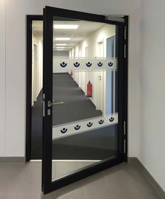
© DGUV
Abb. 1 Glasfläche mit barrierefreier Kennzeichnung in Augenhöhe.
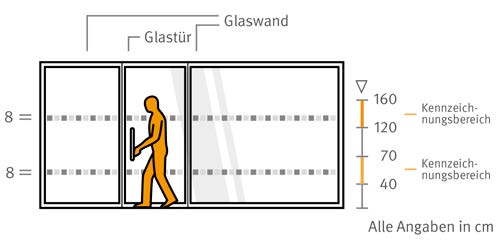
© K.Jaworski/DGUV
Abb. 2 Markierungen auf Glanzglasflächen
Um Gebäude barrierefrei zu gestalten werden Türen
und immer häufiger auch Fenster mit elektrischen
Antrieben zum Öffnen und Schließen ausgestattet. Damit
Ihre Beschäftigten vor Verletzungen geschützt werden sind
diese Türen und Fenster mit Sicherungssystemen ausgestattet.
Achten Sie darauf, dass eine regelmäßige Überprüfung
erfolgt, um einen sicheren Betrieb zu gewährleisten |
Glasflächen
- Sorgen Sie bei durchsichtigen Glasflächen und -türen
für eine Kennzeichnung in Augenhöhe, wenn die Gefahr
besteht, dass Personen dagegen laufen können.
Achten Sie darauf, dass Ihre Beschäftigten nicht durch
Zersplittern der Glasflächen verletzt werden können
(z. B. bruchsichere Werkstoffe, geeignete Abschirmungen
oder Splitterschutzfolien).
Berücksichtigen Sie weitergehende Anforderungen von
Menschen mit Behinderungen an Ihre Arbeitsstätte wie z. B.
die Alarmierung von Personen mit Höreinschränkungen.
|
Weitere Informationen
|
- VBG (Hrsg.): Arbeitsstätten sicher planen und gestalten (= VBG-Fachwissen; Version 3.1/2015-01), Hamburg.
|
3.2.1 Beleuchtung
Die Beleuchtung im Büro muss der Art der Sehaufgabe entsprechen und an das
Sehvermögen Ihrer Beschäftigten angepasst sein, nur dann ist ein beschwerdefreies
Arbeiten an Bildschirmen gewährleistet. Konzentration und Wohlbefinden der Beschäftigten
werden maßgeblich durch Beleuchtung und Tageslichteinfall beeinflusst.
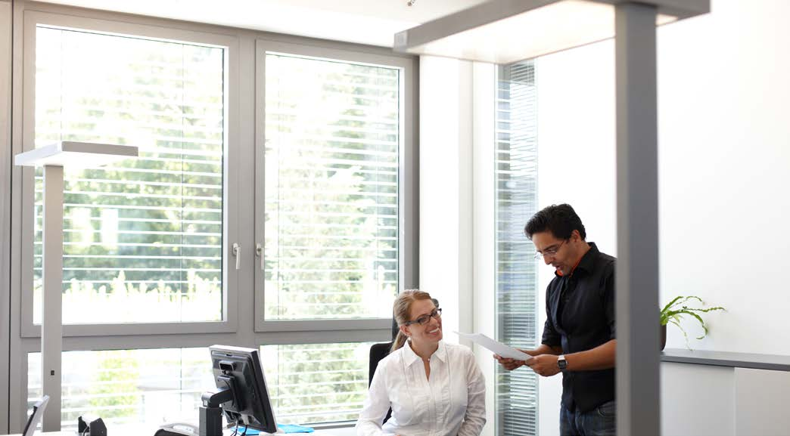
© VBG
|
Weitere Informationen
|
- DGUV Information 215-210 „Natürliche und künstliche Beleuchtung von Arbeitsstätten“
- DGUV Information 215-211 „Tageslicht am Arbeitsplatz – leistungsfördernd und gesund“ (bisher BGI/GUV-I 7007)
- DGUV Information 215-442 „Beleuchtung im Büro - Hilfen für die Planung der künstlichen Beleuchtung in Büroräumen“ (bisher BGI 856)
- DGUV Information 215-444 „Sonnenschutz im Büro“ (bisher BGI 827)
- DIN 5035 „Beleuchtung mit künstlichem Licht“, Teil 8 „Arbeitsplatzleuchten – Anforderungen, Empfehlung und Prüfung“, Ausgabedatum: 2007-07
- DIN EN 12464 „Licht und Beleuchtung – Beleuchtung von Arbeitsstätten“, Teil 1 „Arbeitsstätten in Innenräumen“, Ausgabedatum: 2011-08
|
Mögliche Gefährdungen sind:
- visuelle Belastungen durch mangelhafte Beleuchtung (z. B. zu geringe Beleuchtungsstärken, Blendung, Reflexionen und Spiegelungen)
- nicht ausreichendes Tageslicht
- Nichterkennen von Gefahrenstellen durch schlechte Beleuchtung
Die Auswirkungen für Ihre Beschäftigten können z. B. sein:
- Kopfschmerzen
- tränende und brennende Augen
- Flimmern vor den Augen
- Verspannungen
- vorzeitige Ermüdung
- Konzentrations- und Schlafstörungen
- Verletzung durch Sturz, Stolpern oder Anstoßen
Eine ergonomische Bürobeleuchtung dient der Leistungsfähigkeit und der Gesundheit Ihrer Beschäftigten.
- Stellen Sie in Arbeitsräumen möglichst ausreichend Tageslicht und eine Sichtverbindung nach außen sicher. Durch Tageslicht werden das Wohlbefinden und die Leistungsfähigkeit positiv beeinflusst.
Eine Arbeitsstätte verfügt z. B. dann über ausreichend
Tageslicht, wenn das Verhältnis von lichtdurchlässiger Fläche zur Raumgrundfläche mindestens 1:10 beträgt.
- Sorgen Sie für eine ausreichende und gleichmäßige Ausleuchtung ohne große Hell-Dunkel-Unterschiede an den Arbeitsplätzen.
- Sorgen Sie dafür, dass Arbeitsflächen, Arbeitstische
und Bildschirme frei von störenden Reflexionen und
Blendungen sind, z. B. durch geeignete Arbeitsmittel,
Aufstellung der Arbeitsplätze mit Blickrichtung parallel
zur Fensterfront und ggf. Sonnenschutzvorrichtungen.
- Halten Sie die Mindestwerte der Beleuchtungsstärke
ein, ggf. veranlassen Sie eine Prüfung (Tabelle 3). Beachten
Sie, dass anspruchsvolle Sehaufgaben und ältere
Beschäftigte mehr Licht benötigen (z. B. 750 Lux anstatt
500 Lux).
|
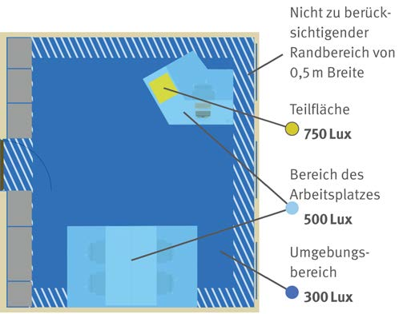
© K.Jaworski/DGUV
Abb. 3 Teilflächenbezogene Beleuchtung
Tabelle 3 Mindestbeleuchtungsstärken in Anlehnung an ASR 3.4 Anhang 1
| Schreiben, Lesen, Bildschirmarbeit, Erste Hilfe Räume |
500 Lux |
| Technisches Zeichnen (Handzeichnen) |
750 Lux |
| Umgebungsbereich Bildschirmarbeitsplatz, Ablegen, Kopieren, Empfangstheke |
300 Lux |
| Verkehrsflächen und Flure |
50 Lux |
| Verkehrsflächen und Flure im Bereich von Absätzen und Stufen |
100 Lux |
Archive, Pausenräume, Teeküche, Toiletten |
200 Lux |
- Stellen Sie eine blendfreie Grundbeleuchtung durch Decken-, Hänge- und ggf. ergänzende Wandleuchten sicher. Der alleinige Einsatz von Tisch- oder Stehleuchten ist nicht ausreichend.
- Erhöhen Sie bei besonderen Sehanforderungen die Beleuchtungsstärke auf einer Mindestfläche von 600 mm x 600 mm auf mindestens 750 Lux (Abbildung 3), z. B. mithilfe einer geeigneten Tischleuchte.
- Vermeiden Sie Blendung durch den Einsatz entblendeter Leuchten mit einem UGR-Wert von nicht größer 19.
- Achten Sie auf einen möglichst seitlichen Lichteinfall auf die Arbeitsplätze, der keine störenden Schatten auf die Arbeitsfläche wirft.
- Vor allem direkt strahlende Leuchten sollten nicht unmittelbar über den Köpfen der Beschäftigten angeordnet sein.
Die beste Wahl der künstlichen Lichtquelle stellt
Deckenbeleuchtung mit Leuchtstofflampen oder LEDs dar. LEDs haben einen geringeren Energieverbrauch, sind langlebiger, sorgen sofort für eine 100 % gleichmäßige Lichtleistung, Starter und Vorschaltgerät entfallen.
- Beachten Sie die empfohlenen Helligkeiten (Reflexionsgrade) von Decken, Wänden und Böden.
- Sorgen Sie dafür, dass in der Hauptblickrichtung keine Blendquellen (z. B. Fenster, reflektierende Möbelflächen) vorhanden sind.
- Vermeiden Sie Belastungen der Augen durch große Helligkeitsunterschiede (maximaler Unterschied der Leuchtdichte am Arbeitsplatz 3:1, im Umfeld 10:1).
- Verwenden Sie in einem Raum nur Lampen mit gleicher Lichtfarbe. Für die Standardbeleuchtung im Büro werden Farbtemperaturen von 3300 K bis 5300 K empfohlen.
- Bei vielen Arbeitsaufgaben und für das Wohlbefinden Ihrer Beschäftigten ist auch auf eine gute Farbwiedergabe durch die Leuchtmittel zu achten (Farbwiedergabeindex Ra mindestens 80). Dadurch werden auch die Farben von Sicherheitszeichen nicht verfälscht.
- Lassen Sie die Beleuchtungsanlage regelmäßig reinigen und gegebenenfalls die Leuchtmittel austauschen. Vermeiden Sie Flimmern, Flackern und andere Störungen z. B. durch defekte Beleuchtungen. Beauftragen Sie für Wartungs- und Instandsetzungsarbeiten an Beleuchtungseinrichtungen nur fachkundige Personen.
- Denken Sie auch an Ihre Sicherheitsbeleuchtung auf den Rettungswegen und lassen Sie diese auch regelmäßig überprüfen.
|
3.2.2 Klima
Ein behagliches Raumklima hat großen Einfluss auf die Leistungsfähigkeit und
das Wohlbefinden der Beschäftigten in Ihrem Unternehmen. In diesem Abschnitt
wird dargestellt, welche Werte für die Klimafaktoren, wie Lufttemperatur, Luftfeuchte,
Luftbewegung und Wärmestrahlung umzusetzen sind, damit Ihre Beschäftigten
das Raumklima als behaglich empfinden.
© victosha - stock.adobe.com
|
Weitere Informationen
|
- DGUV Information 215-510 „Beurteilung des Raumklimas“ (bisher BGI/GUV-I 7003)
- DGUV Information 215-520 „Klima im Büro – Antworten auf die häufigsten Fragen“ (bisher BGI/GUV-I 7004)
- DGUV Information 215-444 „Sonnenschutz im Büro“ (bisher BGI 827)
|
Für Ihre Beschäftigten bestehen die folgenden Gefährdungen:
- Zu hohe oder zu niedrige Lufttemperatur im Raum,
- Störungen des Wohlbefindens, sinkende Konzentrations- und Leistungsfähgkeit, z. B. durch unbehagliches Raumklima, hohe CO2-Konzentration bei unzureichender Lüftung;
- lokale Abkühlungen des Körpers durch Zugluft oder kalte Flächen (z. B. Schulter-Nacken-Bereich, Rücken, Füße),
- Belastungen durch Schimmelpilze und Bakterien, z. B. durch hohe Luftfeuchtigkeit in Verbindung mit mangelhafter Lüftung, fehlende Wartung von raumlufttechnischen Anlagen.
Isolation (Wärmedämmung)
- Stellen Sie sicher, dass Fußböden, Wände und Decken
gegen Wärme und Kälte gedämmt sind, sodass Ihre
Beschäftigten ausreichend gegen eine unzuträgliche
Wärmeableitung und Wärmezufuhr geschützt sind.
Lüftung
- Achten Sie darauf, dass Ihre Räume vorrangig frei über Fenster gelüftet werden. Untersuchungen zeigen, dass bei freier Fensterlüftung weniger Beschwerden als in klimatisierten Räumen auftreten.
- Sorgen Sie durch regelmäßiges Lüften (Stoßlüften) dafür, dass der Kohlendioxidgehalt der Raumluft einen Wert von 1000 ppm nicht überschreitet.
- Stellen Sie sicher, dass raumlufttechnische Anlagen regelmäßig und fachgerecht gereinigt, gewartet und ggf. instandgesetzt werden.
- Prüfen Sie die Luftgeschwindigkeit im Raum. Diese sollte bei sitzender Tätigkeit und einer Lufttemperatur von 20 °C einen Wert von 0,15 m/s am Arbeitsplatz nicht überschreiten. Bei höheren Lufttemperaturen können Ihre Beschäftigten höhere Luftgeschwindigkeiten als angenehm empfinden.
Luftfeuchte
Bei einer Fensterlüftung ergibt sich die relative Luftfeuchte
durch den Luftaustausch. Eine zusätzliche Befeuchtung
der Raumluft ist aus gesundheitlichen Gründen
nicht empfehlenswert. Wichtig ist, dass Ihre
Beschäftigten ausreichend Flüssigkeit zu sich nehmen.
Raumlufttechnische Anlagen mit Luftbefeuchtern sollten
so ausgelegt sein, dass die relative Luftfeuchte
maximal 50 Prozent beträgt. Eine zu hohe Luftfeuchte
begünstigt die Bildung von Schimmelpilzen. |
Lufttemperatur in Arbeitsräumen
- Sorgen Sie für eine angemessene Lufttemperatur in Ihren Arbeitsräumen. Diese muss bei sitzender Tätigkeit Ihrer Beschäftigten (zum Beispiel im Büro) mindestens 20 °C betragen, eine Lufttemperatur bis 22 °C wird empfohlen. Verrichten Ihre Beschäftigten mittelschwere Arbeit im Stehen oder Gehen (zum Beispiel im Lager und Archiv) ist eine Lufttemperatur von mindestens 17 °C zu realisieren.
- Bei Außentemperaturen bis 26 °C soll auch die Lufttemperatur im Büro 26 °C nicht überschreiten. Ergreifen Sie andernfalls geeignete Maßnahmen zur Reduzierung der Lufttemperatur (vgl. Tabelle 4).
- Bauen Sie an Fenstern, Oberlichtern oder Glaswänden geeignete Sonnenschutzvorrichtungen (idealerweise außenliegend) ein, um einer übermäßigen Erwärmung der Räume durch Sonneneinstrahlung vorzubeugen.
- Achten Sie darauf, dass störende direkte Sonneneinstrahlung auf den Arbeitsplätzen vermieden wird.
Behaglichkeitsempfinden
Das Behaglichkeitsempfinden kann individuell differieren und ist abhängig von z. B. Geschlecht, Aktivitätsgrad, Alter, Bekleidung und der Aufenthaltsdauer im Raum. Es unterliegt tages- und jahreszeitlichen Schwankungen. |
Tabelle 4 Maßnahmen entsprechend der Lufttemperaturen im Raum (in Anlehnung an ASR A3.5 „Raumtemperaturen“)
| Temperaturbereich |
Maßnahmen |
| bis 26 °C |
• keine zusätzlichen Maßnahmen erforderlich |
ab 26 °C bis 30 °C
Maßnahmen sollen ergriffen werden |
• effektive Steuerung des Sonnenschutzes
• effektive Steuerung der Lüftungseinrichtungen
• Lüftung in den frühen Morgenstunden
• Reduzierung von thermischen Lasten
• Nutzung von Gleitzeitregelungen zur Arbeitszeitverlagerung
• Lockerung der Bekleidungsregelungen
• Bereitstellung geeigneter Getränke |
ab 30 °C bis 35 °C
Maßnahmen müssen ergriffen werden |
ab 35 °C |
• der Arbeitsraum ist ohne technische Maßnahmen (z. B. Luftdusche) und organisatorische Maßnahmen (z. B. Entwärmungsphase) als solcher nicht nutzbar |
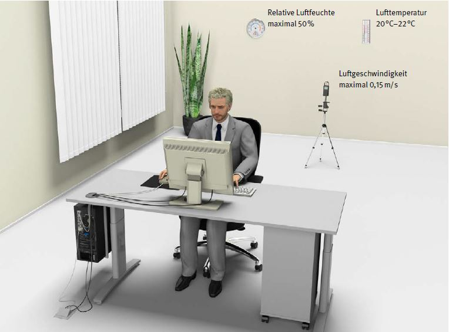
© K.Jaworski/DGUV
Abb. 4 Übersicht zu Raumklimafaktoren in einem Arbeitsraum
3.2.3 Lärm und Akustik
Ein Gespräch unter Kollegen, die Beantwortung telefonischer Anfragen oder die Besprechung einer anderen Arbeitsgruppe im selben Büroraum, dies alles kann zu Lärmbelastungen der Beschäftigten in Ihrem Unternehmen führen. Hinzu kommen Geräusche, z. B. durch Drucker, Klimatechnik sowie Straßen- und Verkehrslärm. Eine gute Raumakustik reduziert diese Störungen.
© Syda Productions - stock.adobe.com
|
Weitere Informationen
|
- DGUV Information 215-410 „Bildschirm- und Büroarbeitsplätze – Leitfaden für die Gestaltung“ (bisher BGI 650)
- DGUV Information 215-443 „Akustik im Büro – Hilfe für die Akustische Gestaltung von Büros“ (bisher BGI 5141)
- DIN 45645 „Ermittlung von Beurteilungspegeln aus Messungen“, Teil 2 „Ermittlung des Beurteilungspegels am Arbeitsplatz bei Tätigkeiten unterhalb des Pegelbereiches der Gehörgefährdung“, Ausgabedatum: 2012-09
- DIN 18041 „Hörsamkeit in Räumen – Anforderungen, Empfehlungen und Hinweise für die Planung“, Ausgabedatum: 2016-03
|
Für Ihre Beschäftigten bestehen die folgenden Gefährdungen:
- physiologische Reaktionen (z. B. erhöhte Ausschüttung von Stresshormonen, Anstieg des Blutdrucks und der Herzschlagfrequenz),
- psychische Reaktionen (z. B. Ärger, Konzentrationsbeeinträchtigung),
- dauerhafte Schädigung des Gehörs durch hohe Lärmbelastung beim Telefonieren insbesondere beim Einsatz von Headsets
Achten Sie darauf, dass auch in den anderen Räumen in Abhängigkeit von den ausgeübten Tätigkeiten der Beurteilungspegel so gering wie möglich gehalten wird. Dabei sollten die Werte in Tabelle 5 nicht überschritten werden.
Arbeitsmittel
- Achten Sie bereits bei der Anschaffung von Arbeitsmitteln auf geräuscharme Geräte (z. B. Aktenvernichter, Staubsauger, Kaffeevollautomat).
- Vermeiden Sie Störgeräusche, z. B. von Drucker, Kopierer, Aktenvernichter oder Fax, indem Sie diese Geräte in eigenen Technikräumen aufstellen.
- Beschaffen Sie Headsets mit Pegelbegrenzung, damit ein Tages-Lärmexpositionspegel von 80 dB(A) nicht überschritten wird.
Headsets sollten über eine Pegelbegrenzung verfügen, sodass die übertragenen Signale auf ein unschädliches Maß begrenzt werden (Spitzenpegel 118 dB(A)). Ihre Beschäftigten sollten die Lautstärke durch eine Regelmöglichkeit den individuellen Bedürfnissen und der jeweiligen Situation (z. B. schlechte Verbindung, laut sprechende Person) anpassen können. |
Beeinflussung der Raumakustik
Lombardeffekt
Ein hoher Hintergrundgeräuschpegel führt dazu, dass Ihre Mitarbeiterinnen
und Mitarbeiter immer lauter sprechen und dadurch der Lärmpegel im
Raum weiter zunimmt (Lombardeffekt). Der Effekt funktioniert auch in umgekehrter
Richtung: Werden Hintergrundgeräusche durch raumakustische
Maßnahmen reduziert, sprechen auch Ihre Beschäftigten leiser und die
Lärmbelastung nimmt weiter ab. |
Tabelle 5 Beurteilungspegel für verschiedene Tätigkeiten
| Beurteilungspegel |
Merkmale der Tätigkeit z. B. |
Beispiele |
| ≤ 55 dB(A) |
• Hohe Konzentration
• Schöpferisches Denken
• Entscheidungsfindung
• Problemlösung
• Hohe Sprachverständlichkeit |
• Wissenschaftliches und kreatives Arbeiten
• Entwickeln von Software
• Entwerfen, Übersetzen, Diktieren
• Aufnehmen und Korrigieren von schwierigen Texten
• Tätigkeiten im Call Center |
| 55 – 70 dB(A) |
• Mittlere Konzentration
• Ähnliche wiederkehrende Aufgabe bzw. Arbeitsinhalte
• Leicht zu bearbeitende Aufgaben
• Für Kommunikationszwecke erforderliche Sprachverständlichkeit |
• Tätigkeiten mit Publikumsverkehr
• Arbeiten im Archiv, Lager- oder Technikraum |
| 70 – 80 dB(A) |
• Geringe Konzentration
• Hoher Routineanteil
• Geringere Anforderung an die Sprachverständlichkeit |
• Reinigungsarbeiten mit Staubsauger oder Hochdruckreiniger,
• Hausmeistertätigkeit |
Achten Sie darauf, dass sich Ihre Beschäftigten nicht
durch Telefonate und Gespräche gegenseitig stören.
Sorgen Sie dafür, dass an Arbeitsplätzen mit überwiegend
geistigen Tätigkeiten ein Beurteilungspegel von 55 dB(A)
und die Nachhallzeit (0,6 Sekunden in Gruppen- und
Großraumbüros sowie 0,8 Sekunden in Ein- und Zweipersonenbüros)
nicht überschritten wird, indem Sie
- große schallreflektierende Flächen (Decke, Wände, Boden) mit gutem schallabsorbierenden Material ausstatten,
- schallharte Oberflächen (z. B. Beton, Fliesen, Naturstein, Glas) vermeiden,
- an Fensterfronten geeignete Materialien (z. B. Vertikal-Lamellenstores) anbringen (Abbildung 5),
- Möbelfronten schallabsorbierend gestalten (Abbildung 5),
- Schallschirme zur Schallabsorption und zur Abschirmung des Direktschalls einsetzen,
- ausreichende Abstände zwischen Arbeitsplätzen und Kommunikationsbereichen vorsehen,
- Materialien einsetzen, die im Bereich von Sprache (250 Hz bis 2000 Hz) über hohe Absorptionsgrade verfügen.
Je höher und breiter die Schallschirme sind, desto besser schirmen sie den Schall ab. Besonders wirksam sind Schirme mit massivem Kern und absorbierender Schicht auf beiden Seiten. |
Schallabsorptionsgrad
Der Schallabsorptionsgrad ist eine wichtige Kenngröße
für Materialien. Er gibt an, wie viel Schall an der Oberfläche
„geschluckt“ wird. Bei einem Absorptionsgrad
von 1 wird der auftretende Schall vollständig absorbiert.
Ein Absorptionsgrad von 0 heißt, dass der Schall
vollständig reflektiert wird (vgl. Abbildung 6). |
Achten Sie beim Neubau oder der Neuplanung von Räumen darauf, dass die Raumakustik ein Bestandteil der Planung ist. Beziehen Sie Fachleute für Raumakustik ein, wenn Sie Änderungen an bestehenden Räumen vornehmen lassen möchten. |
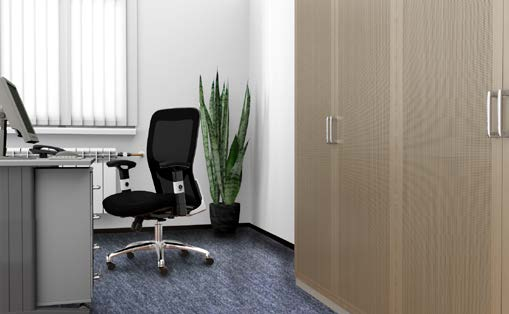
© K.Jaworski/DGUV
Abb. 5 Möglichkeiten zur Verbesserung der Raumakustik:
Schallabsorbierende Lamellenstores und Möbel mit Schallabsorptionsfläche
sowie schallabsorbierender Teppichboden

© DGUV
Abb. 6 Absorption und Reflexion von Schall
3.3 Büro- und Bildschirmarbeit
3.3.1 Raumgestaltung
Äußern sich Ihre Beschäftigten häufiger über beengte Verhältnisse? Sind die
Verkehrs- und Fluchtwege breit genug, damit man im Brandfall problemlos in
Sicherheit kommt? Ausreichend große Flächen sind die Voraussetzung für ein
ergonomisches und effizientes Arbeiten Ihrer Beschäftigten. In diesem Kapitel
erhalten Sie Informationen zur Flächennutzung.
© contrastwerkstatt - stock.adobe.com
In beengten Räumlichkeiten bestehen für Ihre Beschäftigten folgende Gefährdungen:
- Stoßen an Einrichtungsgegenständen
- Stolpern und Stürzen durch eingeengte Verkehrswege und abgestellte Materialien
- Kritische Situationen im Notfall durch Engpässe, verstellte Verkehrswege und nicht benutzbare Fluchtwege
- Gesundheitsbeschwerden durch nicht ergonomisch angeordnete Arbeitsplätze
- Gefühl der Belästigung, Bedrängung oder Bedrohung durch Verletzung der persönlichen Distanz
Um die oben beschriebenen Gefährdungen in Ihrem Büro
zu vermeiden, sind für Bildschirm- und Büroarbeitsplätze
folgende Richtwerte festgelegt:
- 8 – 10 m2 pro Person bzw.,
- 12 – 15 m2 pro Person im Großraumbüro (d. h. Grundfläche > 400 m2).
Diese Flächen setzen sich aus folgenden Einzelflächen zusammen (Abbildung 7):
- Arbeitsfläche (Platte Büroarbeitstisch) mindestens 1600 mm x 800 mm (Breite x Tiefe), (bei geringem Arbeitsmittelbedarf ist eine Verringerung auf 1200 mm Breite möglich; vgl. Kapitel 3.3.2)
- Bewegungsfläche am Arbeitsplatz mindestens 1,5 m2 (Breite und Tiefe mindestens 1 m)
- Stellflächen für weitere Büromöbel, Büromaschinen und -geräte (Drucker, Kopierer, Fax) sowie für andere benötigte Materialien (z. B. Produktmuster)
- Funktionsflächen für bewegliche Teile von Möbeln, Maschinen, Geräten und Einrichtungen
- Benutzerflächen für Personen an Möbeln, Maschinen, Geräten und Einrichtungen mindestens 800 mm Tiefe bzw. Funktionsflächen an Möbeln, Maschinen, Geräten und Einrichtungen (z. B. Schrank mit Auszug) zuzüglich 500 mm Sicherheitsabstand
- ausreichend breite Verkehrswege (Tabelle 6)

© VBG
Abb. 7 Flächen am Büroarbeitsplatz
Planen Sie zusätzliche Flächen für Pausen- und Besprechungsbereiche ein. Achten Sie auf eine barrierefreie Gestaltung. Hierdurch können größere Flächen notwendig sein.
- Sie müssen für Fenster und Türen ausreichende Funktionsflächen vorsehen. Tragen Sie Sorge dafür, dass bei der Nutzung keine Quetsch-, Scher- und Stoßstellen zu anderen Gebäudeteilen oder Einrichtungsgegenständen entstehen (z. B. Sicherheitsabstand zum Körper von mindestens 500 mm).
- Achten Sie darauf, dass Benutzerflächen an den Arbeitsplätzen nicht verstellt oder überlagert werden. Die Möbelfunktionsflächen von nur an diesem Arbeitsplatz genutzten Schränken dürfen die Benutzerfläche überlagern.
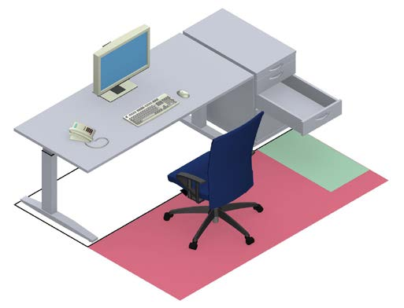
© VBG
Abb. 8 Beispiel für zulässige Überlagerungen von Flächen
Achten Sie bei der Aufstellung der Tische auf eine Blickrichtung parallel zur Fensterfront (Abbildung 9). Hierdurch sollen störende Blendung sowie Reflexionen auf dem Bildschirm durch Tageslicht vermieden werden. (vgl. Kapitel 3.2.1) |

© K.Jaworski/DGUV
Abb. 9 Anordnung Bildschirm
Verkehrs- und Fluchtwege
- Achten Sie auf ausreichend breite Verkehrswege (vgl. Tabelle 6) und dass diese nicht durch bewegliche Teile von Arbeitsmitteln eingeschränkt werden.
- Sorgen Sie dafür, dass Fluchtwege ständig freigehalten werden.
Tabelle 6 Mindestbreiten von Verkehrs- und Fluchtwegen
Mindestbreiten von Verkehrs- und Fluchtwegen*
(Ermittlung in Abhängigkeit der Anzahl der Benutzerinnen und Benutzer) |
| Anzahl der Benutzerinnen und Benutzer* |
Lichte Breite |
mögliche Einschränkungen der lichten Breite nur an Türen in Fluren |
| bis 5 |
875 mm an keiner Stelle weniger als 800 mm |
maximal um 75 mm, d. h. mindestens 800 mm Breite |
| bis 20 |
1000 mm |
maximal um 150 mm |
| bis 200 |
1200 mm |
| bis 300 |
1800 mm |
| bis 400 |
2400 mm |
*) Bei der Ermittlung der Anzahl müssen Sie auch Personen
berücksichtigen, die zu kurzen Besprechungen
oder Meetings an den Arbeitsplatz kommen.
- Stellen Sie sicher, dass die Breite des Zugangs zum persönlich zugewiesenen Arbeitsplatz mindestens 600 mm beträgt und Gänge zu gelegentlich benutzten Betriebseinrichtungen (z. B. Thermostat, Fenster) mindestens 500 mm breit sind.
- Achten Sie auf eine barrierefreie Gestaltung. Hierdurch können größere Verkehrswegbreiten notwendig sein.
Raumhöhe
- Achten Sie auf eine ausreichende Raumhöhe. Diese richtet sich nach der Grundfläche der Arbeitsräume (vgl. Tabelle 7).
- Im Rahmen der Gefährdungsbeurteilung können Sie
prüfen, ob das Maß für die Raumhöhe um 0,25 m herabgesetzt
werden kann, wenn keine gesundheitlichen
Bedenken für Ihre Beschäftigten bestehen. Sie dürfen
jedoch eine lichte Höhe von 2,50 m nicht unterschreiten.
In Arbeitsräumen bis zu 50 m2 Grundfläche können
Sie die lichte Höhe auf das nach Landesbaurecht zulässige
Maß herabsetzen, wenn dies mit der Nutzung der
Arbeitsräume vereinbar ist.
Tabelle 7 Mindestraumhöhen
| Grundfläche |
lichte Höhe von Büroräumen |
| < 50 m2 |
mindestens 2,50 m |
| > 50 m2 |
mindestens 2,75 m |
| > 100 m2 |
mindestens 3,00 m |
| > 2000 m2 |
mindestens 3,25 m |
3.3.2 Möblierung
Büromöbel wie Tische, Stühle, Schränke und Regale sind wichtige Arbeitsmittel
in Ihrem Unternehmen. Sie müssen sicher und funktional sein. Gleichzeitig
sollen sie dazu geeignet sein, Bewegungsmangel entgegenzuwirken. Geeignete
Büroarbeitsstühle unterstützen die natürliche Haltung des Menschen im Sitzen.
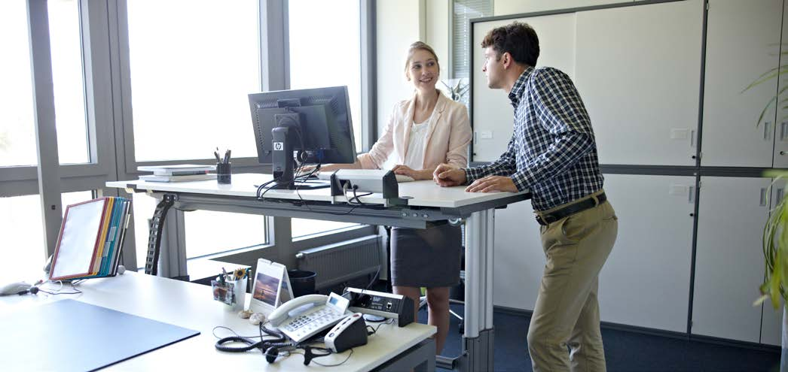
© VBG
Für Ihre Beschäftigten bestehen die folgenden Gefährdungen:
- Verletzungen durch Kippen oder Umstürzen von Möbeln, Quetsch- und Scherstellen an bewegten Teilen oder scharfe Ecken und Kanten
- elektrische Gefährdungen bei entsprechenden Einbauten (z. B. Verkabelung)
- Sturz bei unbeabsichtigtem Wegrollen des Büroarbeitsstuhls
- Zwangs- oder Fehlhaltungen durch ergonomisch ungünstige Gestaltung und Einstellung der Möbel
- Gestalten Sie die Arbeitsplätze in Ihrem Unternehmen sicher und ergonomisch.
- Berücksichtigen Sie dabei die persönlichen Bedürfnisse Ihrer Beschäftigten.
- Achten Sie darauf, dass elektrische Einrichtungen an Ihren Möbeln ausschließlich durch Fachkräfte eingerichtet und regelmäßig kontrolliert werden.
- Vermeiden Sie stark glänzende Oberflächen und achten Sie auf geeignete Reflexionsgrade (siehe Kapitel 3.2.1).
Büroarbeitstische
Beschaffen Sie Tische, die eine flexible Anordnung von
Bildschirm, Tastatur, Schriftgut und anderen Arbeitsmitteln
ermöglichen (ausreichend große Arbeitsfläche).
- Die Arbeitsfläche soll mindestens 1600 mm breit und 800 mm tief sein. In Ausnahmefällen können Sie die Breite auf 1200 mm verringern, wenn der Arbeitsplatz nur mit einem Bildschirmgerät ausgerüstet ist, wenig Schriftgut verwendet wird und keine wechselnden Tätigkeiten ausgeübt werden. Die Anforderungen an höhenverstellbare Tische finden Sie in Abbildung 10.
- Sorgen Sie dafür, dass unterhalb der Arbeitsfläche ein ausreichend großer, unverstellter Beinraum mit einer Breite von mindestens 850 mm vorhanden ist (empfehlenswert 1200 mm oder mehr).
Der Wechsel zwischen sitzenden und stehenden Tätigkeiten schafft zusätzliche Bewegungsmöglichkeiten. Deshalb ist es empfehlenswert, Sitz-/Steharbeitstische, die diesen Wechsel ermöglichen, einzusetzen (Verstellbereich 650 mm bis 1250 mm, Abbildung 10). |

© K.Jaworski/DGUV
Abb. 10 Vollständig höhenverstellbare Büroarbeitstische
Büroarbeitsstühle
- Achten Sie darauf, dass Sitz und Rückenlehne höhenverstellbar und als Einheit drehbar sind.
- Sorgen Sie dafür, dass der Stuhl über gebremste Rollen verfügt (kein Wegrollen des Stuhls bei Entlastung) und die Rollen zur Art des Fußbodens passen (Abbildung 11).
- Die meisten Büroarbeitsstühle sind auf eine tägliche Nutzung von acht Stunden und ein Körpergewicht von 110 kg ausgelegt. Setzen Sie für schwerere Personen oder Mehrschichtbetrieb dafür geeignete Stühle ein.
- Wählen Sie möglichst Stühle mit Armauflagen, da diese für Ihre Beschäftigten ergonomisch günstig sind. Empfehlenswert sind verstellbare Armauflagen, deren Höhe einen Bereich von 180 mm bis 290 mm über der Sitzfläche umfasst.

© K.Jaworski/DGUV
Abb. 11 Links Rolle für harte Bodenbeläge (zweifarbig);
rechts Rolle
für weiche Bodenbeläge (einfarbig)
Tabelle 8 Auswahlhilfe für ergonomisch gestaltete Büroarbeitsstühle
| Bezeichnung |
Maßbereich |
| Sitzhöhe |
< 400 bis 530 mm |
| Verstellbereich Sitzhöhe |
> 120 mm |
| Sitztiefe |
370 bis 470 mm |
| Sitzbreite |
> 450 m |
| Lordosenstütze |
Abstützpunkt verstellbar im Bereich 170 bis 230 mm über Sitzfläche |
| Oberkante der Rückenlehne über der Sitzfläche |
> 450 mm |
| Rückenlehnenbreite |
> 400 mm |
| Rückenlehnenneigung |
verstellbar, mehr als 15° |
Keine Dauerlösung!
Sorgen Sie dafür, dass alternative Sitzmöbel (z. B. Sitzbälle, Pendelhocker) von Ihren Beschäftigten nur als temporäres Trainings- und Übungsgerät genutzt werden. Aufgrund erhöhter Unfallgefahr, rasch eintretender Ermüdung der Muskulatur und fehlender Einstellmöglichkeiten sind diese nicht als Büroarbeitsstuhl geeignet. |
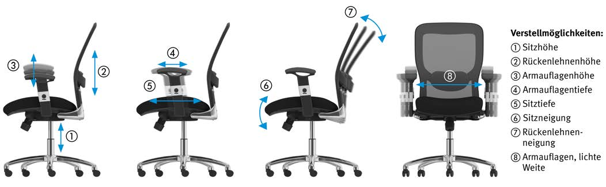
© K.Jaworski/DGUV
Abb. 12 Verstellmöglichkeiten an einem Büroarbeitsstuhl
Schränke, Regale und weitere Ablagemöglichkeiten
- Sie müssen dafür Sorge tragen, dass Schränke, Regale, Bürocontainer und Raumgliederungselemente standsicher aufgestellt werden.
- Stellen Sie Ihren Beschäftigten ab einer Ablagehöhe von 1,80 m geeignete Aufstiege (z. B. Tritt, Elefantenfuß, Leiter) zur Verfügung.
Standsicher sind im Allgemeinen:
- Möbel mit hohem Eigengewicht und niedrigem Schwerpunkt
- Möbel, die an Decken, Wänden oder untereinander gegen Umstürzen gesichert sind
- Schränke und Bürocontainer mit Zusatzgewichten, zusätzlicher Verankerung oder Auszugsperren
- Schränke und Regale, wenn diese die in Abbildung 13 dargestellten Empfehlungen einhalten
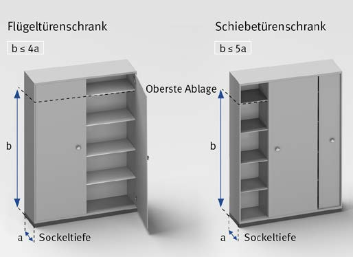
© K.Jaworski/DGUV
Abb. 13 Verhältnis der Sockeltiefe zur Höhe der obersten Ablage
|
Weitere Informationen
|
- DGUV Information 215-410 „Bildschirm- und Büroarbeitsplätze – Leitfaden für die Gestaltung“ (bisher BGI 650)
- VBG (Hrsg.): Die Qual der Wahl – wie beschaffe ich den passenden Stuhl? (= VBG-Praxis-Kompakt, Version 1.2/2015-03), Hamburg.
- Normenreihe DIN EN 527 „Büromöbel – Büro-Arbeitstische“
- Normenreihe DIN EN 1023 „Büromöbel – Raumgliederungselemente“
- Normenreihe DIN EN 14073 „Büromöbel – Büroschränke“
- Normenreihe DIN EN 1335 „Büromöbel – Büro-Arbeitsstuhl“
|
3.3.3 Bildschirm
Eines der wichtigsten Arbeitsmittel am Büroarbeitsplatz ist der Bildschirm.
Qualität und Geräteeinstellungen des Bildschirms entscheiden zum erheblichen
Teil darüber, wie beschwerdefrei Ihre Mitarbeiterinnen und Mitarbeiter arbeiten
können. So kann z. B. eine falsche Höheneinstellung zu Haltungsbeschwerden,
eine zu hohe Bildschirmhelligkeit zu Augenproblemen führen.
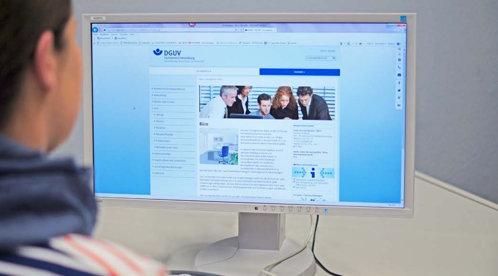
Am Bildschirmarbeitsplatz können durch nicht ergonomische
Bildschirmgestaltung oder ungünstige Bildschirmeinstellungen
Gefährdungen für die Augen oder des Bewegungsapparates,
insbesondere Verspannungen durch Zwangshaltungen, entstehen.
Mögliche Gefährdungen sind:
- Zwangs- oder Fehlhaltungen durch zu hohe Bildschirme, zu kleine Zeichen oder ungünstige Anordnung mehrerer Bildschirme
- Belastungen der Augen durch schlecht entspiegelte Bildschirme, durch unscharfe oder zu kleine Zeichen und durch ein unausgewogenes Helligkeitsverhältnis im Gesichtsfeld
- Psychische Ermüdung durch erhöhte Anforderungen an Aufmerksamkeit und Konzentration
Reduzieren Sie diese Gefährdungen durch die Umsetzung der folgenden Maßnahmen.
- Beschaffen Sie Bildschirme, die sich bis kurz über die Aufstellfläche absenken lassen. Idealerweise sollten Ihre Beschäftigten zum Betrachten des Bildschirms um ca. 30 ° bis 35 ° aus der Waagerechten nach unten blicken.
- Achten Sie darauf, dass der Bildschirm so nach hinten geneigt ist, dass Ihre Beschäftigten ihn senkrecht zur Oberfläche betrachten können.
- Setzen Sie möglichst gut entspiegelte Bildschirme ein (matte Bildschirmanzeige), um störende Reflexionen und Spiegelungen zu vermeiden. Diese verschlechtern den Zeichenkontrast und die Erkennbarkeit von Zeichen.
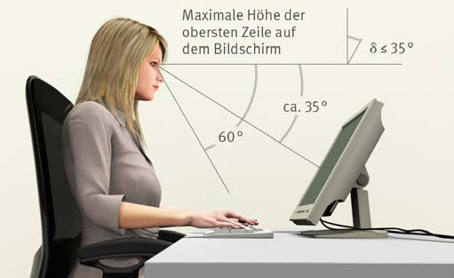
© DGUV
Abb. 14 Anordnung des Bildschirms
Bildschirme werden bezüglich ihrer Reflexionseigenschaften in drei Reflexionsklassen eingeteilt.
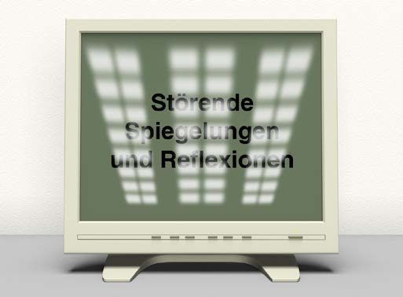
© DGUV
Abb. 15 Störende Spiegelungen und Reflexionen
| Die bisher gebräuchlichen Reflexionsklassen werden heute nicht mehr angegeben. Stattdessen finden Sie die Bedingungen, unter denen die Reflexionen des Bildschirms messtechnisch ermittelt werden (erste Spalte der Tabelle unten). Im GS-Zertifikat entspricht die Angabe „Lichtquelle mit großflächiger Öffnung = 200 cd/m2 und Lichtquelle mit kleinflächiger Öffnung = 2000 cd/m2“ der alten Reflexionsklasse I. Sie können diesen Bildschirm in allen Büroumgebungen einsetzen. |
Tabelle 9 Einteilung von Bildschirmen in Reflexionsklassen
| Leuchtdichte von gerichtet reflektierten Lichtquellen (cd/m2) |
Passende Umgebung |
Alte Reflexionsklasse
nach DIN EN ISO 13406-2 |
| Lgrossfl = 200 und Lkleinfl = 2000 |
Geeignet für allgemeinen Bürogebrauch * |
I |
| Lgrossfl = 200 oder Lkleinfl = 2000 |
Geeignet für die meisten, aber nicht alle Büroumgebungen ** |
II |
| Lgrossfl = 125 oder Lkleinfl = 200 |
Erfordert eine spezielle, kontrollierte Umgebungsbeleuchtung *** |
III |
großfl = großflächige Lichtquelle; kleinfl = kleinflächige Lichtquelle
| * |
Bildschirme dieses Typs können in jeder Büroumgebung eingesetzt werden. |
| ** |
Bei diesen Bildschirmen ist bei nicht idealen Beleuchtungsbedingungen oder fensternaher Aufstellung der Geräte eventuell mit störenden Reflexionen auf dem Bildschirm zu rechnen. |
| *** |
Bei diesen Bildschirmen sind Störungen durch Reflexionen in der Regel so stark, dass diese Geräte für Büroarbeit in normalen Büroumgebungen
nicht infrage kommen. Diese Störungen lassen sich nur durch eine vollständig diffuse Beleuchtung, die technisch kaum realisierbar
ist, vermeiden, wenn man gleichzeitig verhindert, dass sich helle Flächen (Wände, Fenster) im Bildschirm spiegeln können. |
|
Beachten Sie, dass Ihre Beschäftigten die Farben mit steigender Beleuchtungsstärke auf dem Bildschirm schlechter unterscheiden können, vor allem bei gut entspiegelten Bildschirmen.
- Achten Sie auf Herstellerangaben, für welche Beleuchtungsstärke der Bildschirm geeignet ist. Damit Bildschirme auch an fensternahen Arbeitsplätzen noch unterscheidbare Farben liefern, sollten Sie Bildschirme mit „Vorgesehenen Bildschirmbeleuchtungsstärken“ von mindestens 1500 bis 2000 Lux einsetzen.
- Schaffen Sie Bildschirme mit hellem und mattem Gehäuse an, da diese besser in eine helle Umgebung und zur meist am Bildschirm benutzten Positivdarstellung (d. h. dunkle Zeichen auf hellem Grund) passen. Damit erzielen Sie eine ausgeglichene Helligkeitsverteilung im Blickfeld. Die Augen Ihrer Mitarbeiterinnen und Mitarbeiter werden keinen unnötigen Helligkeitsanpassungen (Adaptationen) ausgesetzt.
- Betreiben Sie LCD-Bildschirme in der höchsten darstellbaren Auflösung (physikalische Auflösung), um eine optimale Zeichenschärfe zu erzielen.
- Verzichten Sie auf den Einsatz von Bildschirmfiltern, da diese in der Regel die Darstellungsqualität der Bildschirme verschlechtern.
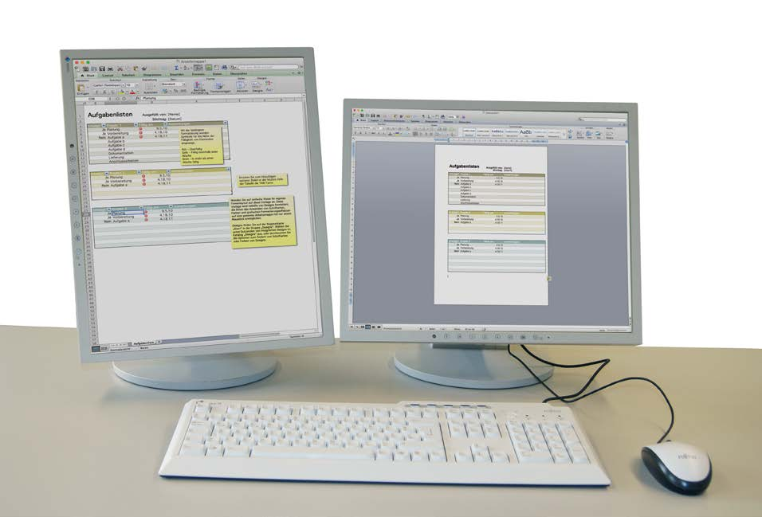
© DGUV
Wenn Ihre Beschäftigten mit mehreren Fenstern oder eingescannten Dokumenten arbeiten, hängt es von der Arbeitsaufgabe ab, ob ein Großbildschirm (z. B. 22, 24 oder 27 Zoll) oder zwei Bildschirme benutzt werden. DIN A4-Dokumente lassen sich auf einem 19 Zoll-Bildschirm im Hochformat gut darstellen und bei Dokumenten mit kleinen Schriftzeichen auch leicht vergrößern. |
Damit Ihre Beschäftigten beim Arbeiten mit Großbildschirmen oder mehreren Bildschirmen übermäßige Kopf- und Augenbewegungen mit eventuellen Beschwerden vermeiden, sollten Sie möglichst schmale und niedrige Bildschirmkombinationen verwenden. Dies gilt insbesondere für Beschäftigte mit einem durch eine Gleitsichtbrille eingeschränkten Blickfeld. Bei Mehr-Bildschirm-Lösungen sollten die Bildschirme schmale Gehäuserahmen haben und dicht beieinander stehen. Setzen Sie Bildschirme mit geringer Blickwinkelabhängigkeit ein (d. h. keine TN (Twisted Nematic)-Anzeige). |
Beschäftigte benötigen unter Umständen zur Verbesserung der Sehleistung bei Arbeiten an Bildschirmen eine spezielle Bildschirmbrille (in der Regel nicht vor dem 40. Lebensjahr). Lassen Sie sich und Ihre Beschäftigten von Ihrer Betriebsärztin oder Ihrem Betriebsarzt beraten. |
3.3.4 Eingabemittel
Am Büroarbeitsplatz werden als Eingabemittel hauptsächlich Tastaturen und Mäuse verwendet. Auch hier sollten Sie auf eine ergonomische Gestaltung achten. Eine nicht ergonomische Gestaltung oder eine falsche Ein- oder Aufstellung kann zu Beschwerden im Muskel-Skelett-System sowie zu Augenproblemen führen.
© pressmaster - stock.adobe.com
|
Weitere Informationen
|
- DGUV Information 215-410 „Büro- und Bildschirmarbeitsplätze – Leitfaden für die Gestaltung“ (bisher BGI 650)
- VBG (Hrsg.): Alternative Eingabemittel an Bildschirmarbeitsplätzen. Informationen für Arbeitsmediziner und Betriebsärzte (= VBG-Fachwissen; Version 1.1/2013), Hamburg.
- DIN EN ISO 9241 „Ergonomie der Mensch-System-Interaktion“, Teil 410: „Gestaltungskriterien für physikalische Eingabegeräte“, Ausgabedatum: 2012-12
|
Für Ihre Beschäftigten bestehen Gefährdungen für
- den Bewegungsapparat
- die Augen.
Risikofaktoren für das Auftreten solcher Beschwerden sind:
- Zwangs- oder Fehlhaltungen durch zu hohe Tastaturen und Mäuse sowie durch eine ungünstige Aufstellung
- Belastungen der Augen durch ein unausgewogenes Helligkeitsverhältnis im Gesichtsfeld, glänzende Oberflächen (insbesondere Tasten) und zu kleine Tastenbeschriftungen
Mit folgenden Maßnahmen reduzieren Sie die oben genannten Gefährdungen.
Tastatur
- Achten Sie darauf, dass Sie möglichst flache Tastaturen beschaffen. Die Bauhöhe der Tastatur (mittlere Tastaturreihe) darf höchstens 30 mm betragen. Dies lässt sich nur mit eingeklappten Tastaturfüßen erreichen! Bei solchen Tastaturen können Ihre Beschäftigten auf eine Handballenauflage verzichten.
- Sorgen Sie dafür, dass die Fläche vor der Tastatur eine Tiefe von 100 mm bis 150 mm hat. Diese Fläche ist für das Auflegen der Hände ausreichend (Abbildung 16).
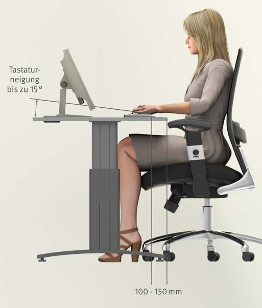
© K.Jaworski/DGUV
Abb. 16 Anordnung der Tastatur auf der Arbeitsfläche
Setzen Sie Volltastaturen mit alphanumerischem und numerischen sowie Editier- und Funktionsbereich ein, wenn Texteingaben, numerische Eingaben oder das Editieren von Daten notwendig sind. Wählen Sie Kompakttastaturen ohne numerischen Block, wenn nur wenige numerische Eingaben notwendig sind oder die Mausbedienung im Vordergrund steht. Ihre Beschäftigten haben dann eine entspannte und neutrale Armhaltung (Abbildung 17). |
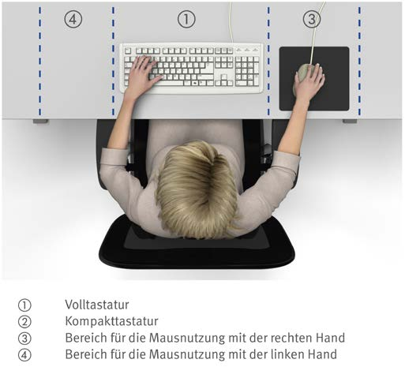
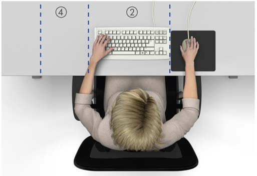
© K.Jaworski/DGUV
Abb. 17 Position einer Volltastatur (oben) und einer
Kompakttastatur mit besserer Erreichbarkeit der Fläche
für die Mausbedienung (unten)
Achten Sie bei der Beschaffung von Tastaturen auf eine gut lesbare Tastenbeschriftung.
Zu einer gut lesbaren Tastenbeschriftung (vgl. Abbildung 18) gehören eine ausreichende Schriftgröße von mindestens 2,9 mm Zeichenhöhe (besser 3,2 mm) und dunkle Schriftzeichen auf hellem Untergrund mit gutem Kontrast. (vgl. Abbildung 18) |
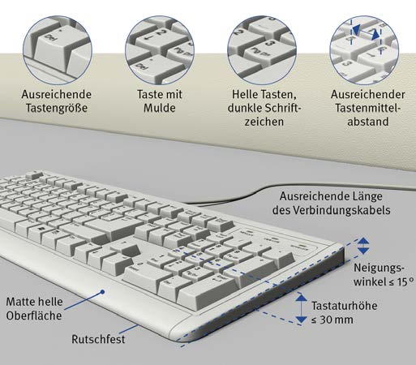
© K.Jaworski/DGUV
Abb. 18 Anforderungen an Tastaturen
Vorteile von hellen Tastaturen
Helle Tastaturen mit dunkler Beschriftung passen besser zur Positivdarstellung am Bildschirm (d. h. dunkle Zeichen auf hellem Untergrund). Sie vermeiden störende Helligkeitsunterschiede und ersparen dadurch den Augen Ihrer Beschäftigten unnötige Helligkeitsanpassungen (Adaptationen). Tastenoberflächen glänzen bei längerer Benutzung entweder infolge von Abnutzung oder durch Fingerschweiß. Dies fällt bei hellen Tasten weniger auf als bei dunklen Tasten. |
Maus
Beschaffen Sie Mäuse, die der Handgröße angepasst sind und ein Auflegen des Handballens auf der Arbeitsfläche ermöglichen. Symmetrische Mäuse sind mit jeder Hand bedienbar, es gibt auch spezielle Mäuse für Links- oder Rechtshänder (vgl. Abbildung 19). |
- Die Schaltelemente der Maus sollen leicht und sicher bedienbar sein und beim Betätigen eine Rückmeldung liefern. Ihre Beschäftigten sollen die Maus in normaler Körper- und Handhaltung betätigen können, ohne dass diese dabei unbeabsichtigt ihre Position ändert.
- Achten Sie darauf, dass für eine Maus eine ausreichende, an die Tastatur angrenzende Bewegungsfläche vorhanden ist. Ein dünnes Mousepad ist hier nützlich.
© DGUV
Abb. 19 Mausgrößen
Alternative Eingabemittel
 Für Beschäftigte mit chronischen Erkrankungen oder Bewegungseinschränkungen kann die Anschaffung spezieller alternativer Eingabemittel (z. B. Vertikalmaus, geteilte Tastatur) im Einzelfall erforderlich sein. Lassen Sie sich hierzu von Ihrer Betriebsärztin oder Ihrem Betriebsarzt beraten! Für Beschäftigte mit chronischen Erkrankungen oder Bewegungseinschränkungen kann die Anschaffung spezieller alternativer Eingabemittel (z. B. Vertikalmaus, geteilte Tastatur) im Einzelfall erforderlich sein. Lassen Sie sich hierzu von Ihrer Betriebsärztin oder Ihrem Betriebsarzt beraten! |

© DGUV
3.3.5 Softwareergonomie
Software beeinflusst im Büro die Arbeitsleistung und die Produktivität. Eine hohe
Nutzungsqualität der eingesetzten Software entscheidet mit über die Qualität
der Arbeitsergebnisse. Physische und psychische Belastung, Zufriedenheit und
Motivation Ihrer Beschäftigten werden durch eine ergonomisch gestaltete Software positiv beeinflusst.
© goodluz/Fotolia
Abb. 20 Die Softwaregestaltung beeinflusst die Aufgabenbearbeitung
|
Weitere Informationen
|
- DGUV Information 215-450 „Softwareergonomie“
- DIN EN ISO 9241 „Ergonomie der Mensch-System-Interaktion“ (verschiedene Teile)
|
Durch nicht ergonomisch gestaltete Software können physische und psychische Gefährdungen auftreten:
- Erhöhte Belastung der Augen und des Sehvermögens
- Psychische Ermüdung durch hohe Belastung des Gedächtnisses, hohe Anforderungen an die Aufmerksamkeit und Konzentration
- Monotonie durch wiederkehrende Arbeitsschritte oder Aufgaben
- Psychische Sättigung z. B. durch erwartungswidrige und widersprüchliche Funktionsweise der Software
- Stress z. B. durch Orientierungsmangel bei fehlender Softwarestrukturierung oder Fehlfunktionen
Allgemeine Maßnahmen
- Sorgen Sie dafür, dass die Software gebrauchstauglich ist, d.h. die Benutzerinnen und Benutzer ihre Arbeitsaufgaben damit effektiv, effizient und zufriedenstellend erledigen können. Aufgaben, die mithilfe von Software bearbeitet werden, müssen für die Beschäftigten gut ausführbar sein.
- Achten Sie darauf, dass die Software an verschiedene Bildschirme, andere Hardware (z. B. Ein- und Ausgabemittel) und Umgebungsbedingungen angepasst werden kann.
- Beteiligen Sie die Beschäftigten bei der Auswahl und Beschaffung der Software.
Maßnahmen zum Interaktionsdesign
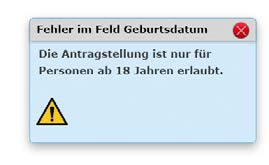
© DGUV
Abb. 22 Negativ- und Positivbeispiel für Fehlertoleranz
Maßnahmen zum Informationsdesign
- Achten Sie darauf, dass die Software für die Beschäftigten Informationen in einer zugänglichen, verständlichen und lesbaren Form bereitstellt.
- Gewährleisten Sie, dass sich Texte, Symbole oder weitere Elemente in hohem Kontrast vom Hintergrund abheben. Kontraste und die Eignung von Farbkombinationen lassen sich z. B. mit dem Kontrast-Analyzer bestimmen (siehe Abbildung 23). Ein theoretisch ermittelter Kontrast sollte für Normalschriften mindestens 4,5:1 betragen, wobei Kontraste größer als 7:1 empfehlenswert sind.
Hinweis:
Den Kontrast-Analyzer und die Mess-Folien-Vorlage zum Selbstdrucken finden Sie unter
www.vbg.de/softwareergonomie.
Beachten Sie, dass der Kontrast-Analyzer den Kontrast aus den programmierten Werten ermittelt. Der reale Kontrast am Bildschirm kann davon abweichen.
Abb. 23 Hinweis zum Kontrast-Analyzer
- Vermeiden Sie ungünstige Farbkombinationen, um Leserlichkeit und Erkennbarkeit von Zeichen zu verbessern.

© DGUV
Abb. 24 Ungünstige Farbkombinationen
- Beachten Sie, dass Farbkodierungen zur Orientierung hilfreich sein können. Informationen sollten zusätzlich auf eine zweite Art kodiert sein, wie etwa durch ein Symbol, Muster oder eine Zeichenform (z. B. ! ✓).
- Verwenden Sie zum Lesen auf dem Bildschirm serifenlose Schriften, wie z. B. Verdana, Arial, Calibri und Tahoma.
© DGUV
Abb. 25 Schriftarten
- Stellen Sie eine zuverlässige Leserlichkeit durch eine Mindestzeichenhöhe sicher.
Tabelle 10 Zeichenhöhe für Großbuchstaben
| Sehabstände |
| Sehabstand |
Empfohlene Zeichenhöhe in mm |
| 500 |
3,2 bis 4,5 |
| 600 |
3,9 bis 5,5 |
| 700 |
4,5 bis 6,4 |
| 800 |
5,2 bis 7,3 |
- Berücksichtigen Sie Organisationsprinzipien zur Anordnung von Elementen und Informationen (z. B. nach Nähe, Gleichartigkeit, Symmetrie) um die Wahrnehmung, das Auffinden und die Zuordnung von Informationen zu erleichtern (siehe Abbildung 26).
- Achten Sie auf eine Maskengestaltung mit Gliederung nach Bereichen.

Abb. 26 Beispiel zur Anwendung der Organisationsprinzipien
3.3.6 Gesundheit im Büro
An Arbeitsplätzen im Büro können langes Sitzen, Bewegungsmangel sowie besondere Anforderungen an das Sehvermögen die Gesundheit Ihrer Beschäftigten beeinträchtigen. Beschwerden im Bereich des Muskel-Skelettsystems sowie Augenbeschwerden sind nicht selten. Zudem kann es zu psychischen Beeinträchtigungen kommen.
© VBG
|
Weitere Informationen
|
- DGUV Information 215-410 „Bildschirm- und Büroarbeitsplätze – Leitfaden für die Gestaltung“ (bisher BGI 650)
- VBG (Hrsg.): GMS - Gesundheit mit System; Leitfaden für ein betriebliches Gesundheitsmanagement (= VBG-Fachwissen; Version 2.0/2016-06), Hamburg
- VBG (Hrsg.): Gesundheit im Büro (= VBG-Fachwissen; Version 5.1/2017-02), Hamburg
- VBG (Hrsg.): Gymnastik im Büro. Fit durch den Tag (= VBG-Info; Version 1.1/2010-12), Hamburg.
|
Für Ihre Beschäftigten bestehen vor allem Gefährdungen durch:
- Mangelhafte Arbeitsplatzergonomie
- Bewegungsmangel
- Dauerbelastung der Augen und des Sehvermögens
- Mängel in der Arbeitsorganisation, z. B. unangemessenes Führungsverhalten, Unter- und Überforderung, häufige Störungen, Zeitdruck
In Fehlzeitenstatistiken stehen Erkrankungen des Muskel-Skelettsystems an vorderster Stelle. Auch Beschäftigte im Büro klagen häufig über Muskel-Skelettbeschwerden, vor allem Verspannungen im Bereich der Halswirbelsäule mit Beteiligung des Schulter-Arm-Systems sowie der Lendenwirbelsäule. Bewegungsmangel erhöht zudem das Risiko für das Auftreten von Übergewicht, Herz-Kreislauf-Erkrankungen und Diabetes. Bei einem nicht oder nicht ausreichend korrigierten Sehfehler können Ermüdungserscheinungen im Bereich der Augen auftreten.
Psychische Beeinträchtigungen beeinflussen das Wohlbefinden der Beschäftigten und können zur Entstehung von Erkrankungen beitragen. |
Mit folgenden Maßnahmen können Sie dazu beitragen,
die Arbeitsplätze Ihrer Mitarbeiterinnen und Mitarbeiter
gesund zu gestalten und damit die Beschäftigungsfähigkeit
zu erhöhen:
- Fördern Sie das dynamische Sitzen (d.h. Wechsel zwischen vorderer, mittlerer und hinterer Sitzhaltung) durch die Beschaffung von geeigneten Büroarbeitsstühlen.
- Vermeiden Sie einseitige körperliche Arbeitsbelastungen Ihrer Beschäftigten, indem Sie dafür sorgen, dass notwendige Bewegungsflächen nicht verstellt und Arbeitsabläufe abwechslungsreich gestaltet werden.
- Stellen Sie Drucker, Kopierer und Faxgeräte an zentraler Stelle und nicht unmittelbar am Arbeitsplatz auf.
- Stellen Sie Ihren Beschäftigten Stehpulte oder höhenverstellbare Tische zur Verfügung.
- Sorgen Sie für Bewegung, indem Besprechungen nicht am Arbeitsplatz Ihrer Beschäftigten und auch mal im Stehen stattfinden.
- Motivieren Sie Ihre Mitarbeiterinnen und Mitarbeiter zu mehr Bewegung, wie z. B. Treppensteigen statt Aufzug fahren; Wege zum Drucker, Kopierer, Faxgerät als Bewegungsmöglichkeit nutzen; regelmäßige Bewegungsübungen am Arbeitsplatz durchführen.
Ein Wechsel zwischen Sitzen und Stehen ist gut, ein Wechsel zwischen Sitzen, Stehen und Gehen noch besser. Dies fördert die Bewegung der Wirbelsäule, trägt zur Versorgung der Bandscheiben bei, löst Verspannungen, regt das Herz-Kreislauf-System an und fördert die Konzentration. Unterstützen Sie Ihre Beschäftigen dabei. |
- Prüfen Sie, ob Sie regelmäßig Bewegungsaktionen anbieten können, z. B. im Rahmen eines betrieblichen Gesundheitsmanagements. Veränderungen der Lebensweise gelingen in einer Gruppe gleichgesinnter Kolleginnen und Kollegen wesentlich leichter.
- Achten Sie auf eine gesunde Gestaltung von Arbeitsorganisation und Arbeitsaufgabe, z. B. durch Vermeidung von Über- und Unterforderung, ein gutes Betriebsklima, gesundheitsgerechte Führung (siehe Kapitel 3.1).
Bewegungstraining oder Massage
Das betriebliche Angebot eines Bewegungstrainings ist
empfehlenswert, um zu einer Reduzierung von Beschwerden
und zur Belastungsminderung Ihrer Beschäftigten
beizutragen. Damit lassen sich durch Bewegungsmangel
entstandene gesundheitliche Defizite vermindern. Massagen
setzen demgegenüber nicht ursächlich an den Bedingungen
für die Entstehung von Muskelverspannungen an,
sondern lindern nur kurzfristig die Symptome.
Arbeitsmedizinische Vorsorge durch Betriebsärztin oder Betriebsarzt
Als Unternehmerin oder Unternehmer müssen Sie Beschäftigten,
die an Bildschirmarbeitsplätzen arbeiten, in
regelmäßigen Abständen eine arbeitsmedizinische Vorsorge
für diese Tätigkeit anbieten. Aus der arbeitsmedizinischen
Vorsorge kann sich ergeben, dass Sie den Beschäftigten
in erforderlichem Umfang eine spezielle
Sehhilfe (sogenannte Bildschirmarbeitsplatzbrille) zur
Verfügung stellen müssen.
3.4 Empfangsbereich
Der Empfang ist die erste Anlaufstelle in Ihrem Unternehmen. Er soll ansprechend
und einladend auf Besucherinnen und Besucher wirken. Ihre Beschäftigten
sind in diesem Bereich besonderen Belastungen ausgesetzt. Zum Beispiel kann durch
häufiges Öffnen und Schließen der Tür Zugluft entstehen. In diesem Kapitel erhalten
Sie Hinweise zum Einrichten der Arbeitsplätze am Empfang.
© VBG
In den meisten Fällen sind Arbeitsplätze am Empfang mit
Bildschirmen ausgestattet. Beachten Sie deshalb die im
Kapitel 3.3 beschriebenen Gefährdungen und setzen Sie
die dort beschriebenen Maßnahmen auch bei den
Arbeitsplätzen am Empfang um. Darüber hinaus können
für Ihre Beschäftigten am Empfang noch weitere Gefährdungen bestehen:
- besondere klimatische Bedingungen durch die Gestaltung des Empfangsbereiches (z. B. Zugluft durch Eingangstüren, Hitze im Sommer)
- ungünstige Umgebungsfaktoren (z. B. Lärm, Raumakustik und Beleuchtung)
- Ausrutschen, Stürzen und Stolpern z. B. durch feuchte oder glatte Böden
- psychische Belastung (z. B. soziale Beziehung zu Kundinnen und Kunden, verbale Angriffe, Bedrohung, Emotionsarbeit)
- körperliche Belastung durch langes Stehen oder Sitzen
- Richten Sie den Empfangsarbeitsplatz so ein, dass Bürotätigkeiten im Sitzen ausgeführt werden können. Stellen Sie Ihren Beschäftigten eine geeignete Stehhilfe zur Verfügung, sollte die Aufgabe längeres Arbeiten im Stehen erfordern.
- Sehen Sie gegebenenfalls ausreichende Flächen und Abstellmöglichkeiten vor, damit die Beschäftigten Post, Pakete und Warensendungen ohne Einschränkung der Bewegungsfläche und Verkehrswege zwischenlagern können. Berücksichtigen Sie außerdem ausreichende Flächen für an diesem Arbeitsplatz benötigte Büromaschinen und -geräte (z. B. Frankiermaschine).
- Achten Sie bereits bei der Planung Ihres Empfangs darauf, dass die klimatischen Anforderungen für Arbeitsplätze auch in diesen Bereichen erfüllt werden können (z. B. Lufttemperatur bei sitzender Tätigkeit 20 – 22 °C, Luftgeschwindigkeit maximal 0,15 m/s, siehe Kapitel 3.2.2).
Durch Einrichtung eines Windfangs am Eingang können
Sie den Einfluss von Zugluft am Empfangsarbeitsplatz reduzieren. Insbesondere bei einem hohen Glasanteil in der Fassade des Empfangsbereichs können Sie durch geeignete Sonnenschutzvorrichtungen das Aufheizen reduzieren. |
- Analysieren Sie, welche Tätigkeiten Ihre Beschäftigten
am Empfang ausüben müssen. Danach richtet sich, wie
laut es dort werden darf. Besteht die Arbeitsaufgabe
aus Bildschirmarbeit (überwiegend geistige Tätigkeit),
dann darf der Beurteilungspegel einen Wert von
55 dB(A) nicht überschreiten. Während des Kundenkontaktes
müssen Sie darauf achten, dass ein Wert von
70 dB(A) nicht überschritten wird (siehe Kapitel 3.2.3).
Häufig werden in Empfangsbereichen Materialien
eingesetzt (z. B. Glas, Natursteinfußböden, Sichtbeton), die sich ungünstig auf die Raumakustik auswirken (hohe Nachhallzeit). Durch den Einsatz von Akustiksegeln, Schallabsorbern an Wänden und schallabsorbierenden Möbeln und Einrichtungselementen können Sie für eine gute Raumakustik am Empfang sorgen. Das werden auch Ihre Kundinnen und Kunden zu schätzen wissen. |
- Beachten Sie, dass bei der Bildschirmarbeit am Empfang eine Mindestbeleuchtungsstärke von 500 Lux erreicht wird (siehe Kapitel 3.2.1).
- Lassen Sie Bodenbeläge mit ausreichender Rutschhemmung (siehe Kapitel 3.2) im Empfangsbereich verlegen. Organisieren Sie, wie Rutschgefahren durch z. B. Feuchtigkeit oder Schneematsch im Empfangsbereich beseitigt werden, und unterweisen Sie Ihre Mitarbeiterinnen und Mitarbeiter am Empfang über die von Ihnen festgelegten Maßnahmen.
- Sorgen Sie dafür, dass Ihre Beschäftigten am Empfang über alle notwendigen Informationen (z. B. erwartete Gäste, Telefonlisten, Abwesenheiten) verfügen, um ihre Aufgaben erfüllen zu können (z. B. Beantwortung von Kundenanfragen).
- Schulen Sie Ihr Empfangspersonal im Umgang mit kritischen Gesprächssituationen.
- Legen Sie Verhaltensregeln und konkrete Maßnahmen (z. B. Zugangsverbote, Alarmierung) für eine Bedrohungssituation fest und unterweisen Sie Ihre Empfangsmitarbeiterinnen und Empfangsmitarbeiter hierzu.
3.5 Kommunikationsbereiche
Eine effiziente Kommunikation trägt maßgeblich zur Produktivität Ihres Unternehmens
und einem guten Betriebsklima bei. Dabei spielt das persönliche
Gespräch eine wichtige Rolle. Denn obwohl heute viele Informationen per Mail
oder über digitale Netzwerke ausgetauscht werden, bleibt es ein wichtiger
Bestandteil der Büroarbeit. Dafür benötigen Sie geeignete Bereiche.
© VBG
|
Weitere Informationen
|
- DGUV Information 215-410 „Bildschirm- und Büroarbeitsplätze – Leitfaden für die Gestaltung“ (bisher BGI 650)
- DGUV Information 215-441 „Büroraumplanung – Hilfen für das systematische Planen und Gestalten von Büros“ (bisher BGI 5050)
- DIN 18041 „Hörsamkeit in Räumen – Anforderungen, Empfehlungen und Hinweise für die Planung“, Ausgabedatum: 2016-03
|
- Stolper- und Sturzgefahr zum Beispiel aufgrund zu gering bemessener Verkehrswege, im Weg stehender Gegenstände oder lose herumliegender Kabel
- Sitzen in nicht ergonomischer Haltung aufgrund zu gering bemessener Benutzerflächen oder ungeeigneter Stühle
- Blendung und schlechte Beleuchtung
- Lärmbelastung zum Beispiel aufgrund unzureichender Bau- oder Raumakustik, Lärmquellen im Raum
- Unzureichende visuelle Darstellungsmöglichkeiten (zum Beispiel lichtschwacher Beamer, Säulen oder andere Einbauten im Raum)
Egal, ob im kleinen Kreis oder eine große Besprechung mit Kunden – Kommunikationsbereiche sind in der heutigen Zeit unverzichtbar.
Raumkonzept
- Planen Sie Besprechungsräume, die von externen Personen genutzt werden, in der Nähe des Empfangs sowie in der Nähe von Sanitär- und Pausenbereichen.
- Stellen Sie Garderobenplätze und Stellflächen für Gepäck zur Verfügung.
- Sorgen Sie bei einer Integration in größere Räume für eine ausreichende visuelle und akustische Abschirmung.
Für kurze Besprechungen und den spontanen Austausch unter Ihren Beschäftigten ist das Angebot von Stehtischen, Sitzgruppen oder einer Kaffeebar sinnvoll. Diese können auch für Unterbrechungen während längerer Besprechungen genutzt werden. |
Besprechungsräume
- Berücksichtigen Sie die Anforderungen an Verkehrswege (Kapitel 3.3.1).
- Sie sollten je Person eine Tischfläche von mindestens 800 mm Breite und 800 mm Tiefe vorsehen. Bei geringem Arbeitsflächenbedarf dürfen Sie ausnahmsweise auf 700 mm Breite und 600 mm Tiefe (bei ausreichendem Beinraum) reduzieren.
- Planen Sie unter dem Tisch pro Person eine freie Fläche (Beinraum) von mindestens 600 mm Breite und 800 mm Tiefe ein.
- Die Benutzerfläche muss mindestens 800 mm breit und 800 mm tief sein. Eine Reduzierung der Tiefe auf 600 mm ist möglich, wenn die einzelnen Plätze von hinten frei zugänglich sind und unter dem Tisch ein ausreichend großer Beinraum gegeben ist.
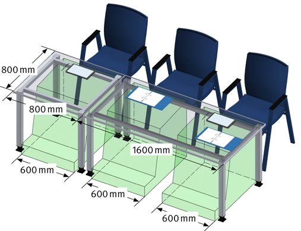
© VBG
Abb. 27 Arbeitsflächen und Bein-/Fußräume von Kommunikationsplätzen
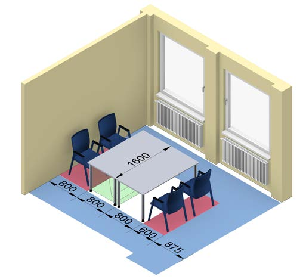
© VBG
Abb. 28 Benutzerflächen an Besprechungsplätzen
- Hinweis: Beachten Sie, dass Rollstuhlfahrer unter dem Tisch eine freie Breite von 900 mm benötigen. Eine Benutzerfläche von mindestens 1200 mm Tiefe sowie eine Wendefläche von 1500 mm x 1500 mm müssen Sie vorsehen.
|
Wählen Sie Möbel und Stühle, die standsicher sind.
Damit die Räume auch für längere Meetings genutzt
werden können, sollten Sie Büroarbeitsstühle einsetzen. Bei häufig wechselnden Personenzahlen kann der Einsatz von Stapelstühlen sinnvoll sein. |
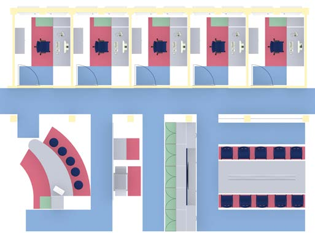
© VBG
Abb. 29 Kombibüro mit Besprechungsbereich und Kommunikationsinsel
Medientechnik
- Berücksichtigen Sie für Konferenz- und Besprechungsräume die Ausstattung, z. B. Beamer, Leinwand, Großbildschirm, Flipchart und Pinnwand. Beachten Sie den erforderlichen Platzbedarf und beschaffen Sie lärmarme Geräte.
- Achten Sie bei der Auswahl von Großbildschirmen auf eine entspiegelte Oberfläche und einen möglichst großen Betrachtungswinkel.
- Vermeiden Sie Stolperstellen durch Kabel und Datenleitungen zum Beispiel durch den Einsatz von Kabelkanälen oder Kabelmatten.
- Denken Sie bei der Planung daran, dass auch die mitgebrachten Geräte der Teilnehmer verkabelt werden müssen. Hierfür eigenen sich Möbel mit integrierten Steckdosen und Datenports.
Umgebungsfaktoren
Ergänzend zu den allgemeinen Hinweisen in den Kapiteln 3.2.1 bis 3.2.3 sollten Sie die nachfolgenden Aspekte berücksichtigen.
- Sorgen Sie für eine Beleuchtung, die gleichmäßiges, flimmer- und blendfreies Licht liefert. Diese sollte individuell einstellbar sein und die Möglichkeit bieten, nur Teile des Raums zu erhellen.
- Sehen Sie Beschattungsmöglichkeiten (z. B. Vertikallamellenstore) vor.
- Achten Sie auf eine gute Hörsamkeit.
- Sorgen Sie für Sauberkeit und Ordnung.
- Stellen Sie eine ausreichend Belüftung sicher.
- Achten Sie auf eine ausgewogene Farbgestaltung.
3.6 Technikbereich
Im Technikbereich sind Ihre Mitarbeiterinnen und Mitarbeiter in direktem
Kontakt mit Druckern, Kopierern, Faxgeräten, Aktenvernichtern, Scannern und
Servern. Hiervon können unterschiedliche Gefährdungen ausgehen. In diesem
Kapitel sind die Gefährdungen sowie Maßnahmen zu deren Vermeidung
beschrieben.
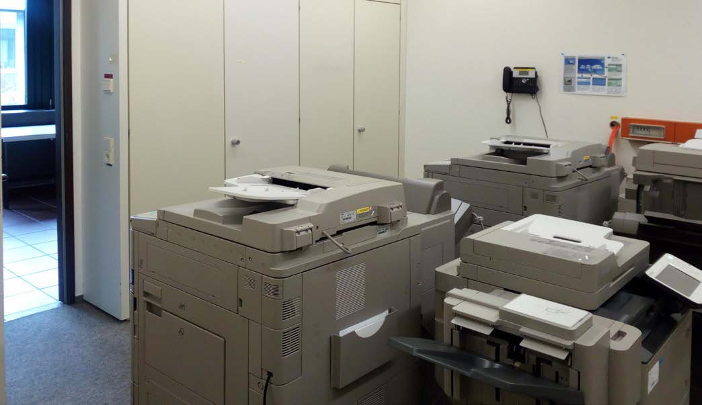
© DGUV
Von Bürogeräten können für Ihre Beschäftigten folgende Gefährdungen ausgehen:
- Elektrischer Stromschlag z. B. durch defekte Anschlussleitungen oder Gehäuse
- Stürzen und Stolpern z. B. durch mangelhafte Verlegung von Kabeln
- Quetschen und Stoßen an Möbeln und Geräten
- Kippen und Umstürzen von Möbeln und Geräten
- Brandgefährdungen durch Schmorbrände
- Lärm durch Geräte
- Emissionen von Druckern und Kopierern
- Erhöhung der Lufttemperatur durch Bürogeräte
- Sorgen Sie dafür, dass alle Elektrogeräte durch Elektrofachkräfte oder unter Leitung und Aufsicht einer Elektrofachkraft fristgemäß geprüft werden. Halten Sie Ihre Beschäftigten an, regelmäßig die Anschlussleitungen und Gehäuse der Geräte auf erkennbare Beschädigungen zu prüfen (Sichtprüfung).
- Achten Sie auf fachgerechte Verlegung der Anschlussleitungen (z. B. keine Reihenschaltung von Mehrfachsteckdosen).
- Vermeiden Sie Stolperstellen (ggf. Verwendung von Kabelbrücken).
- Halten Sie die Verkehrswege frei von Stoß- und Stolperstellen. Sehen Sie ausreichende Verkehrswegbreiten vor (siehe Kapitel 3.3.1) und sorgen Sie dafür, dass keine Materialien (z. B. Papierkartons) oder Arbeitsmittel auf Verkehrswegen abgestellt werden bzw. in die Verkehrswege hineinragen.
- Bauen Sie alte Geräte und Anschlussleitungen nach deren Außerbetriebnahme ab und entsorgen Sie diese fachgerecht.
- Sorgen Sie für ausreichend große Bewegungs- und Funktionsflächen (siehe Kapitel 3.3.1), um eine gefahrlose und ergonomische Bedienung der Geräte zu gewährleisten.
- Sehen Sie Ablage- und Arbeitsflächen neben Kopieren und Druckern vor.
- Achten Sie auf eine standsichere Aufstellung der Bürogeräte und Möbel.
- Vermeiden Sie bei der Aufstellung von Bürogeräten auf Möbeln, dass diese über Möbelaußenkanten hinausragen.
- Stellen Sie geeignete Löscheinrichtungen zur Verfügung und unterweisen Sie Ihre Mitarbeiterinnen und Mitarbeiter im praktischen Umgang damit.
Beachten Sie, dass beim Einsatz von CO2-Feuerlöscher
in engen Räumen eine Erstickungsgefahr für die Beschäftigten bestehen kann. |
Wasser- bzw. Schaumlöscher nach DIN EN 3 „Tragbare
Feuerlöscher“ können bei elektrischen Geräten bis 1000 V
eingesetzt werden, wenn ein Sicherheitsabstand von mindestens
1 m eingehalten wird.
- Achten Sie bereits bei der Anschaffung auf geräuscharme Bürogeräte.
- Stellen Sie diese Geräte nach Möglichkeit in eigenen Technikräumen auf und vermeiden Sie damit Störgeräusche und eine Erhöhung der Lufttemperatur in den Arbeitsbereichen Ihrer Mitarbeiterinnen und Mitarbeiter.
Emissionen von Druckern und Kopiergeräten
Emissionen aus Druckern und Kopiergeräten sind immer
wieder Gegenstand intensiver Berichterstattung in
den Medien. Drucker und Kopiergeräte können geringe
Mengen an Staub, flüchtigen organischen Verbindungen
(VOC) und Ozon emittieren. In vielen modernen
Geräten entsteht heute aufgrund des technischen Fortschrittes
praktisch kein messbares Ozon mehr.
Bei den Staubemissionen kann es sich sowohl um
Papier- und Hausstaub als auch um geringste Mengen
Tonerstaub handeln, wobei der Papierstaubanteil bei
Weitem überwiegt. Verschiedene Untersuchungen
belegen, dass die Emission von regelmäßig gewarteten
Geräten im unbedenklichen Bereich liegt. |
3.7 Sozialbereiche
Ansprechend gestaltete Pausenräume und funktional eingerichtete Teeküchen
sind für Ihre Mitarbeiterinnen und Mitarbeiter ein Zeichen Ihrer Wertschätzung.
Sie dienen auch der Kommunikation. Damit dort keine Gesundheitsschäden, wie
z. B. Verbrühungen und Infektionen entstehen, müssen bestimmte Regeln eingehalten werden.
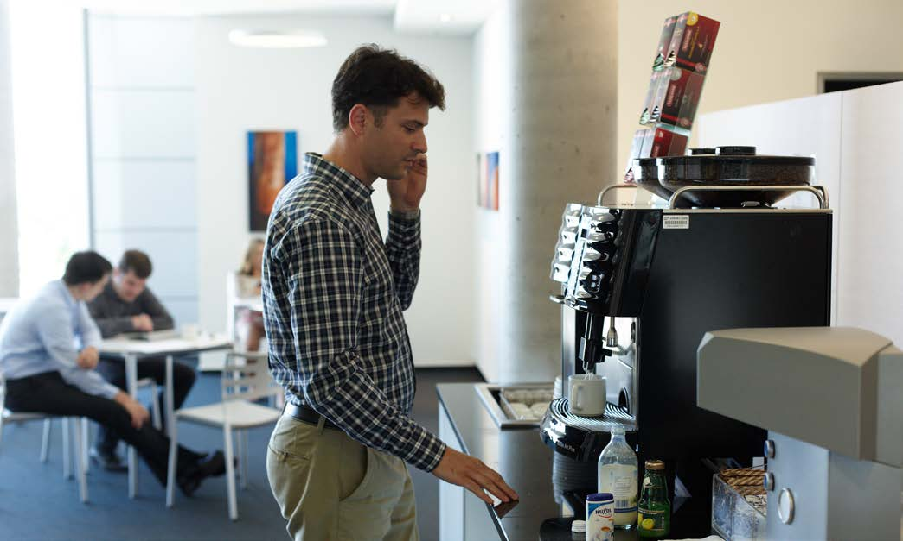
© VBG
In Sozialbereichen können für Ihre Beschäftigten folgende Gefährdungen bestehen:
- Elektrischer Stromschlag z. B. durch defekte Anschlussleitungen oder Gehäuse, Betreiben von Elektrogeräten in Nassbereichen
- Ausrutschen, Stürzen und Stolpern z. B. durch feuchte Böden
- mangelnde Hygiene (z. B. Sanitär- und Küchenbereich)
- Verbrühen durch Umkippen und Berühren z. B. von Kaffeemaschinen und Wasserkochern
- Brandgefährdungen durch Elektrogeräte (z. B. Herdplatte)
- Psychische Belastung durch Lärm (z. B. Betriebseinrichtungen und von außen einwirkender Umgebungslärm in Pausenräumen)
- ungünstige Umgebungsfaktoren (z. B. Temperatur, Lüftung und Beleuchtung)
- Sorgen Sie dafür, dass alle Elektrogeräte durch Elektrofachkräfte
oder unter Leitung und Aufsicht einer Elektrofachkraft
fristgemäß geprüft werden. Halten Sie Ihre
Mitarbeiterinnen und Mitarbeiter an, regelmäßig die
Anschlussleitungen und Gehäuse der Geräte auf erkennbare
Beschädigungen zu prüfen (Sichtprüfung).
| Hinweis: Beachten Sie, dass auch von den Beschäftigten
mitgebrachte, am Netzstrom betriebene Geräte, z. B. Kaffeemaschinen, Ventilatoren und Radios, ebenfalls regelmäßig hinsichtlich der elektrischen Sicherheit überprüft werden müssen. |
- Achten Sie auf die Absicherung der Steckdosenstromkreise besonders in Küchen und Sanitärräumen durch eine RCD-Einrichtung (FI-Schutzschalter 30 mA).
- Stellen Sie Kaffeemaschinen und Wasserkocher auf eine feuerfeste Unterlage (z. B. Fliesen). Sorgen Sie für eine standsichere Aufstellung der Geräte mit ausreichendem Abstand zu Waschbecken und Spülen.
Durch einen separaten Stromkreis für Elektrogeräte
mit Brandgefährdungen (z. B. Herde, Kaffeemaschinen,
Wasserkocher) können diese getrennt von allen anderen
Elektrogeräten, beispielsweise durch eine Zeitsteuerung,
ein- und ausgeschaltet werden. Als Unternehmerin
oder Unternehmer sollten Sie eine solche Schaltung
durch eine Elektrofachkraft installieren lassen. |
- Halten Sie die Verkehrswege frei von Stoß- und Stolperstellen. Sehen Sie ausreichende Verkehrswegbreiten vor (siehe Kapitel 3.3.1) und sorgen Sie dafür, dass keine Materialien (z. B. Reinigungsmittel) auf Verkehrswegen abgestellt werden.
- Lassen Sie Fußböden und Wände in Sanitärbereichen und Küchen mit Materialien ausführen, die sich feucht reinigen lassen (z. B. keramische Fliesen, Kunststoffe).
- Verwenden Sie Fußbodenbeläge, die auch im feuchten Zustand rutschhemmend sind (Rutschhemmung: R9 für Toilettenräume, R10 für Sanitärräume und Teeküchen).
- Die Reinigungsarbeiten in den Sozialräumen Ihres Unternehmens sollten möglichst nicht durch Einrichtungsgegenstände behindert werden.
- Sorgen Sie für eine Nennbeleuchtungsstärke von mindestens 200 lx in Teeküchen, Pausen- und Sanitärräumen.
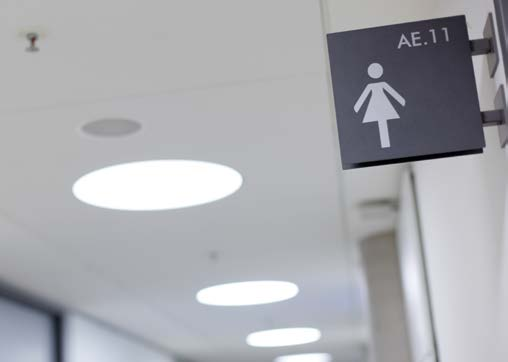
© VBG
Abb. 30 Beispiel zur Kennzeichnung von Sanitärräumen
Sanitärräume
- Richten Sie Toilettenräume getrennt nach Geschlecht ein. Hat Ihr Unternehmen weniger als zehn Beschäftigte, kann auf getrennt eingerichtete Toilettenräume verzichtet werden, wenn eine zeitlich getrennte Nutzung sichergestellt ist.
- Sorgen Sie für eine ausreichende Anzahl von Toilettenbecken und Handwaschgelegenheiten für Ihre Beschäftigten und Gäste (siehe Tabelle 11).
- Bei der Planung Ihrer Büroräume müssen Sie beachten, dass sich die Toilettenräume im gleichen Gebäude befinden und nicht weiter als eine Etage von ständigen Arbeitsplätzen entfernt sind.
- Sorgen Sie dafür, dass Waschgelegenheiten zum Reinigen der Hände unter fließendem Wasser vorhanden sind. Stellen Sie in Toilettenräumen geeignete Mittel zum Reinigen und Trocknen der Hände zur Verfügung (z. B. Seife in Seifenspendern, Einmalhandtücher oder Textilhandtuchautomaten).
- Achten Sie auf eine gute Belüftung der Toilettenräume.
Tabelle 11 Auszug aus ASR A4.1 „Sanitärräume“
| weibliche oder männliche Beschäftigte |
Mindestanzahl bei niedriger Gleichzeitigkeit |
Mindestanzahl bei hoher Gleichzeitigkeit |
| Toiletten/Urinale |
Handwaschgelegenheiten |
Toiletten/Urinale |
Handwaschgelegenheiten |
| bis 5 |
1*) |
1 |
2 |
1 |
| 6 bis 10 |
1*) |
1 |
3 |
1 |
| 11 bis 25 |
2 |
1 |
4 |
2 |
| 26 bis 50 |
3 |
1 |
6 |
2 |
| 51 bis 75 |
5 |
2 |
7 |
3 |
| 76 bis 100 |
6 |
2 |
9 |
3 |
| 101 bis 130 |
7 |
3 |
11 |
4 |
| 131 bis 160 |
8 |
3 |
13 |
4 |
| 161 bis 190 |
9 |
3 |
15 |
5 |
| 191 bis 220 |
10 |
4 |
17 |
6 |
| 221 bis 250 |
11 |
4 |
19 |
7 |
| |
je weitere 30
Beschäftigte
+1 |
je weitere 90
Beschäftigte
+1 |
je weitere 30
Beschäftigte
+2 |
je weitere 90
Beschäftigte
+2 |
| *) für männliche Beschäftige wird zuzüglich 1 Urinal empfohlen |
Pausenbereiche
In Ihrem Unternehmen ist ein Pausenraum erforderlich,
wenn dort mehr als zehn Personen beschäftigt sind. Sie
können auf Pausenräume verzichten, sofern die Büroräume
während der Pause frei von arbeitsbedingten Störungen
(z. B. durch Publikumsverkehr, Telefonate) sind. Pausenräume
haben folgende Anforderungen zu erfüllen:
- Stellen Sie für jeden Beschäftigten im Raum jeweils mindestens 1,00 m2 Grundfläche zur Verfügung. Die Grundfläche eines Pausenraumes muss mindestens 6,00 m2 betragen. Beachten Sie, dass Stellflächen für weitere Einrichtungsgegenstände sowie Verkehrswege hinzuzurechnen sind.
- Sorgen Sie dafür, dass für Ihre Beschäftigten Sitzgelegenheiten mit Rückenlehne und Tische vorhanden sind.
- Vermeiden Sie Beeinträchtigungen, z. B. durch Vibrationen, Stäube, Dämpfe oder Gerüche.
- Achten Sie darauf, dass während der Pause der durchschnittliche Schalldruckpegel aus den Betriebseinrichtungen und dem von außen einwirkenden Umgebungslärm höchstens 55 dB(A) beträgt.
- Sorgen Sie für ausreichendes Tageslicht.
| Wenn Sie schwangere Frauen oder stillende Mütter
beschäftigen, müssen Einrichtungen zum Hinlegen, Ausruhen und Stillen am Arbeitsplatz oder in unmittelbarer Nähe vorhanden sein. |
3.8 Lagerbereich
Für einen reibungslosen Ablauf in Ihrem Unternehmen ist es wichtig, dass Ihre
Beschäftigten immer über die notwendigen Arbeitsmaterialien verfügen. Deshalb
halten Sie verschiedene Arbeitsmaterialien vor und lagern Dokumente zu laufenden
und abgeschlossenen Vorgängen. Im folgenden Kapitel sind wichtige Informationen
zum sicheren Betreiben Ihres Lagers und Archivs zusammengetragen.
|
Weitere Informationen
|
- DGUV Information 215-441 „Büroraumplanung – Hilfen für das systematische Planen und Gestalten von Büros“ (bisher BGI 5050)
- DIN EN 349 „Sicherheit von Maschinen – Mindestabstände zur Vermeidung des Quetschens von Körperteilen“, Ausgabe: 2008-09
|
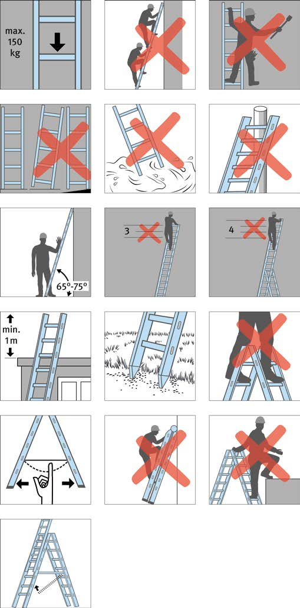
© Marketeam GmbH/DGUV
Abb. 31 Beispiel für Piktogramme Leiter
In Lagerbereichen können für Ihre Beschäftigten folgende Gefährdungen bestehen:
- Kippen von Regalen und Transportmitteln
- Zusammenbrechen von Regalen und Transportmitteln durch Überlastung
- Herabfallen von Materialien und Gegenständen
- Sturz von Aufstiegshilfen (Leiter, Elefantenfuß)
- Stürzen und Stolpern
- Quetschen und Stoßen
- Schnitt- und Stichverletzungen durch Messer und Scheren
- Brandgefährdungen
- Achten Sie auf eine standsichere Aufstellung Ihrer Regale, z. B. durch Befestigen an Wand und Decke oder geeignete Verbindung von mehreren Regalen untereinander. Halten Sie Ihre Beschäftigten an, schwere Gegenstände in den unteren Regalfächern einzulagern.
- Sorgen Sie dafür, dass bei Hängeregisterschränken die Auszugssperren intakt sind.
- Lassen Sie Transportmittel und Regalfächer so beladen, dass die Lasten gleichmäßig verteilt sind.
- Unterweisen Sie Ihre Beschäftigten, welche maximalen Lasten die Regale und Transportmittel aufnehmen können und wie diese sachgerecht zu beladen sind.
- Schützen Sie im Lagerraum eingebaute Leuchten im Handbereich (bis 2,50 m über dem Fußboden) gegen Beschädigung, z. B. durch eine geeignete Abdeckung.
- Stellen Sie geeignete Aufstiegshilfen zur Verfügung und lassen Sie diese regelmäßig auf ihren betriebssicheren Zustand überprüfen. Unterweisen Sie Ihre Mitarbeiterinnen und Mitarbeiter im Umgang mit den Aufstiegshilfen.
- Sorgen Sie für sicher begehbare und freie Verkehrswege. Sehen Sie ausreichende Verkehrswegbreiten vor (siehe Kapitel 3.3.1) und achten Sie darauf, dass keine Materialien (z. B. Papierkartons) oder Arbeitsmittel auf Verkehrswegen abgestellt werden bzw. in die Verkehrswege hineinragen.
- Stellen Sie sicher, dass eine ausreichende Beleuchtung vorhanden ist (siehe Tabelle 12). Auch in einem Notfall müssen sich Ihre Beschäftigten noch orientieren können.
Tabelle 12 Mindestbeleuchtungsstärken in Anlehnung an ASR 3.4 Anhang 1
| Arbeitsbereich im Lager/Archiv |
Mindestwert der Beleuchtungsstärke |
| Lagerräume mit Suchaufgaben |
100 lx |
| Lagerräume mit Leseaufgaben |
200 lx |
| Versand- und Verpackungsbereiche |
300 lx |
- Achten Sie auf die Einhaltung der Sicherheitsabstände (z. B. Fingerquetschung 25 mm) an verfahrbaren Regalen. Unterweisen Sie Ihre Beschäftigten im Umgang mit den Regalanlagen. Lassen Sie die Sicherheitseinrichtungen (z. B. Distanzhalter) regelmäßig überprüfen.
- Stellen Sie Ihren Beschäftigten geeignete Arbeitsmittel zum Öffnen von Verpackungen zur Verfügung und unterweisen Sie im praktischen Umgang damit (z. B. Sicherheitsmesser).
- Stellen Sie sicher, dass Entstehungsbrände in Ihrem Lager oder Archiv frühzeitig erkannt und Ihre Beschäftigten unverzüglich alarmiert werden (z. B. durch Brandmelder).
- Stellen Sie geeignete Löscheinrichtungen (z. B. Wasser- oder Schaumlöscher) zur Verfügung und unterweisen Sie Ihre Mitarbeiterinnen und Mitarbeiter im praktischen Umgang damit.
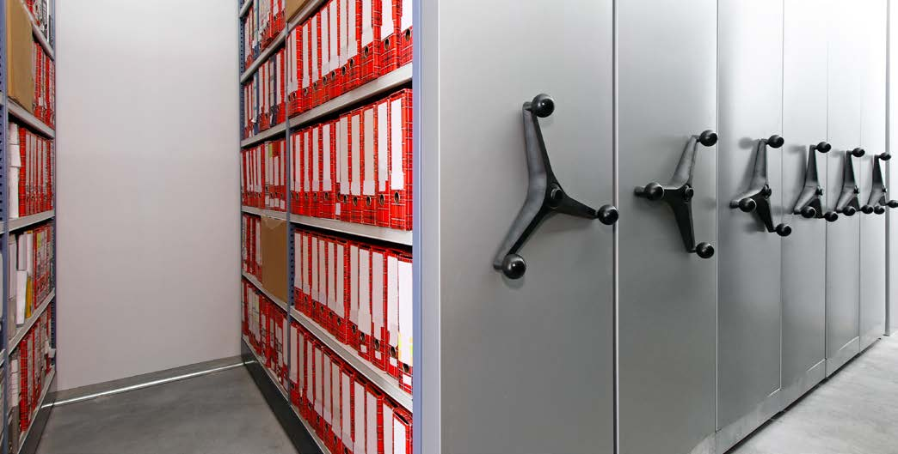
© markobe - stock.adobe.com
Abb. 32 Muster für Regalanlage
3.9 Verkehrssicherheit im Außendienst
Eine aktive Teilnahme am Straßenverkehr erfordert jederzeit die volle
Konzentration auf das Verkehrsgeschehen. Im Fahrzeug verbaute Sicherheitssysteme
können Ihre Beschäftigten hierbei erfolgreich unterstützen. Jede Art von
Ablenkung ist bei der Benutzung eines Fahrzeuges zu vermeiden. Bereits kurze
Unaufmerksamkeiten führen häufig zu schweren Unfällen.
|
Weitere Informationen
|
- DGUV Information 211-040 „Einsatz mobiler Informations- und Kommunikationstechnologie an Arbeitsplätzen“
|
Der Außendienst Ihrer Beschäftigten ist in der Regel durch
wechselnde Arbeitsumgebungen und Termindruck bei der
Reisetätigkeit gekennzeichnet. Dabei können Gefährdungen
und Belastungen entstehen durch:
- Ablenkung, Kommunikation, Blendung, Sichtbehinderung und andere Verkehrsteilnehmer,
- Stürzen und Stolpern,
- Quetschungen am Fahrzeug,
- unzureichende Ladungssicherung,
- ergonomische Fehlhaltung,
- Stresssituationen bei der Koordination von Terminen, spezielle Anforderungen durch den Kunden, Kontaktabwicklung mit der eigenen Zentrale,
- hohen Leistungsdruck,
- Krankheitsrisiken durch Auslandsreisen.
Ihre Beschäftigten im Außendienst handeln und entscheiden
bei der Tätigkeit im hohen Maße eigenverantwortlich.
Legen Sie im Vorfeld die Wahl der Verkehrs- und Arbeitsmittel,
den Transport von Lasten, die Dauer der Reise und
die zu berücksichtigenden Gesundheitsaspekte fest.
Hauptauslöser bei Verkehrsunfällen sind zu hohe Geschwindigkeit,
Nichtbeachtung der Vorfahrt, ungenügender
Sicherheitsabstand und Unachtsamkeit. Der "Arbeitsplatz
Straße" ist gefährlich: 62 % aller tödlichen Arbeits- und
Wegeunfälle geschehen laut DGUV im Straßenverkehr. |
Überprüfen Sie die gültige Fahrerlaubnis und Eignung Ihrer
Beschäftigten. Sorgen Sie für eine fahrzeugspezifische Einweisung
und Unterweisung. Fahrsicherheitstrainings können
sicheres Fahrverhalten unterstützen. Veranlassen Sie
gegebenenfalls bei Auslandstätigkeiten eine arbeitsmedizinische
Vorsorge, bei der der Impfschutz überprüft wird.
Zur Qualität im Außendienst trägt eine gute Unternehmenskultur
bei, die zu stabilen Mitarbeiter- und Kundenbeziehungen
führt. Sorgen Sie in Ihrem Betrieb für eine
gute Außendienstorganisation, bei der die geltenden Arbeitszeitregelungen
eingehalten werden.
Dazu gehören unter anderem:
- Stress- und Zeitmanagement
- Umgang mit Beschwerden
- Berücksichtigung des privaten Umfelds, Work-Life-Balance
- Zusammenarbeit unter Kolleginnen und Kollegen
- Einbeziehung in Teambesprechungen und Fortbildungsmaßnahmen
Legen Sie die Fahrzeugausstattung wie z. B. Sicherheitsausrüstung,
der Witterung angepasste Bereifung und ergonomische
Ausstattung fest. Stellen Sie geeignete Hilfsmittel
zur Ladungssicherung zur Verfügung.
Fahrerassistenzsysteme bringen einen Sicherheitsgewinn
und sollten bei Neubeschaffungen von Fahrzeugen Berücksichtigung
finden. Nur aktivierte Fahrerassistenzsysteme
können den Benutzer unterstützen.
An der Windschutzscheibe angebrachte Mobilgeräte
können während der Fahrt zu Sichtbehinderungen
führen. Bereits ein vergleichsweise kleines handelsübliches
Navigationsgerät führt bei einer Sehdistanz von 15 m
Entfernung zu einem blinden Fleck von 2 m x 3 m. Mobile Geräte, gleich ob Navigationsgeräte, Handys, Tablets oder
Notebooks gelten zudem als Ladung und müssen gesichert werden. |
Ablenkungen aller Art stellen bei der Fahrtätigkeit eine
latente Gefährdung dar. Dabei spielen mobile Informations-
und Kommunikationstechnologien eine beachtliche
Rolle. Meldungen von Navigationsgeräten, Telefonate und
weitere Multimedia-Applikationen führen zu Ablenkungen,
so dass z. B. Verkehrssituationen nicht richtig beurteilt
oder Warnsignale nicht rechtzeitig wahrgenommen
werden können.
Sorgen Sie dafür, dass Ihre Beschäftigten eine Abfahrtskontrolle
durchführen. Hierzu gehört die Prüfung, ob alle
Geräte, Sitze und Spiegel richtig eingestellt sind. Weiterhin
das Verstauen loser Gegenstände im Kofferraum, sowie
das Sichern der Ladung.
Eine Verwendung von geeigneten Halterungen für Bildschirmgeräte
ist zu bevorzugen. Bei der Platzierung von
mobilen Geräten müssen die Wirkungsbereiche der
Airbags berücksichtigt werden.
Nach staatlichem Recht ist der Fahrzeugführerin bzw. dem
Fahrzeugführer die Benutzung eines Mobiltelefons untersagt,
wenn er hierfür das Mobiltelefon bei laufendem
Motor aufnimmt oder hält.
Weisen Sie Ihre Fahrzeugführerin bzw. Fahrzeugführer an:
- Navigationsgeräte oder Telefone nur bei stehendem Fahrzeug zu bedienen,
- Telefonate mit Freisprechanlagen auf das Nötigste zu begrenzen, da jedes Telefonat grundsätzlich zu einer Ablenkung führt; besser im Stand ohne laufenden Motor zu telefonieren,
- auf laute Musik zu verzichten,
- emotionale und komplizierte Gespräche besser vor bzw. nach der Fahrt zu führen,
- Ablenkungen durch Unfälle oder Werbung zu ignorieren,
- notwendige Bürotätigkeiten an Tablets oder Notebooks nicht im Fahrzeug sondern ggf. in einer Fahrpause an einem ruhigen Ort mit Tisch auszuführen,
- Nahrungsaufnahme, Rauchen und Suchen nach Gegenständen im Fahrzeug in Fahrtunterbrechungen zu verlegen,
- regelmäßige Pausen mit Ausgleichsübungen und Bewegung einzulegen,
- auf die Einnahme regelmäßiger Zwischenmahlzeiten zu achten.
3.10 Büroarbeit im Außendienst – Mobile Arbeit
Auch wenn der überwiegende Anteil der Büroarbeit (noch) am Schreibtisch
erledigt wird, nimmt der Anteil der Beschäftigten zu, die notwendigerweise einen
Teil ihrer Büroarbeit im Außendienst erledigen (mobile Arbeit). Dabei ist die
Büroarbeit unterwegs nur die zweitbeste Lösung. Konzentriertes Arbeiten am gut
ausgestatteten Büroarbeitsplatz ist zumeist effizienter und ergonomischer.
© VBG
Für Ihre Beschäftigten bestehen die folgenden Gefährdungen,
z. B. durch eine nicht ergonomische Sitzhaltung,
schlechte Bildschirm- und Tastaturgestaltung:
- Zwangs- oder Fehlhaltungen,
- Belastungen des Bewegungsapparates und der Augen,
- entgrenzte Arbeitszeiten, mangelnden Informationsfluss, fehlende soziale Unterstützung.
- Sorgen Sie dafür, dass Ihre Beschäftigten im Außendienst die Bestimmungen des Arbeitszeitgesetzes und der jeweiligen Tarifverträge einhalten.
- Achten Sie darauf, dass auch Arbeitsplätze Ihrer Beschäftigten bei Kunden ergonomisch gestaltet sind.
- Stellen Sie sicher, dass die im Außendienst Tätigen in den Informationsfluss Ihres Unternehmens eingebunden sind und an Besprechungen und betrieblichen Veranstaltungen teilnehmen können.
| Die häufig angetroffene „Arbeitshaltung“ mit Notebook
oder Tablet-PC auf dem Schoß ist für längeres Arbeiten nicht zu empfehlen. Diese Haltung begünstigt das Auftreten von Schulter- und Nackenverspannungen und es kann zu Kopfschmerzen oder anderen Beschwerden kommen. Zudem werden einige Notebooks auf der Unterseite sehr warm, deshalb empfiehlt sich eine solche Nutzung auch aus diesem Grund nicht. |
| Bei einem Telearbeitsplatz, im Sinne der Arbeitsstättenverordnung,
handelt es sich um einen von Ihnen fest eingerichteten Bildschirmarbeitsplatz im Privatbereich eines Beschäftigten. Sie haben für die notwendige Ausstattung (Mobiliar, Arbeitsmittel und Kommunikationseinrichtungen) des Telearbeitsplatzes zu sorgen. Berücksichtigen Sie bei der Einrichtung eines Telearbeitsplatzes das Kapitel 3 „Büro- und Bildschirmarbeit“. |
Bei der Beurteilung der Arbeitsbedingungen müssen Sie auch die mobile Büroarbeit Ihrer Mitarbeiter berücksichtigen.
| Kleine Geräte, wie Netbooks, Subnotebooks, Ultra
Mobile PCs oder Tablet-PCs, sind wegen der kleinen, oft unentspiegelten Bildschirmanzeige und der kleinen bzw. virtuellen Tastatur für Bürotätigkeiten nur sehr eingeschränkt geeignet. |
Notebooks
Achten Sie bei der Beschaffung von Notebooks neben dem GS-Zeichen, auch auf
- einen gut entspiegelten Bildschirm
- eine Bildschirmanzeige mit großer Helligkeit, die auch im Freien ablesbar ist
- ein stabiles, verwindungssteifes Gehäuse
- eine Tastatur mit hellen Tasten und dunkler Beschriftung, weil diese auch bei schlechten Lichtverhältnissen noch gut lesbar ist
- eine ausreichende Akkukapazität
Erfordert die Tätigkeit im Außendienst, dass mehrere
Personen gleichzeitig den Bildschirm betrachten – zum
Beispiel zu Präsentationszwecken –, sollten Sie Notebooks
mit großem Betrachtungswinkel verwenden.
© VBG
Sollen Notebooks auch im Büro eingesetzt werden, dann
sorgen Sie dafür, dass Anschlüsse für externe Tastatur,
Maus und Bildschirm oder für eine sogenannte
Dockingstation vorhanden sind.
Maus
Wenn Ihre Beschäftigten viel mit Touchpad oder Trackpoint
arbeiten, sollten Sie zusätzliche Mäuse anschaffen.
Voraussetzung für deren Benutzung ist allerdings eine
geeignete Arbeitsfläche, wie ein Tisch. Sorgen Sie dafür,
dass statt sogenannter Notebook-Mäuse nur ergonomisch
geformte, an die Handgröße angepasste Mäuse verwendet
werden.
Drucker
Beschaffen Sie mobile Drucker, wenn unterwegs Dokumente
auszudrucken sind. Wichtig ist auch die Art der
Verbindung zum Notebook (kabelgebunden oder drahtlos
als Wlan und Bluetooth-Systeme). Zu empfehlen sind
leichte Geräte (unter 2 kg) mit guter Druckqualität.
Tablet-PC
Wenn Sie Tablet-PCs im Außendienst einsetzen möchten,
sollten Sie bei der Gerätebeschaffung auf folgende Eigenschaften
achten:
- eine helle, kontrastreiche und matte Anzeige
- eine weitgehend blickwinkelunabhängige Anzeige
- das passende Betriebssystem: nur für die Installation von Apps ( z. B. Android, IOS) oder universelle Software (z. B. Windows 10, Linux)
- eine zu den Arbeitsaufgaben passende Größe der Anzeige (mindestens 10 Zoll)
- eine Akkukapazität für eine Arbeitsschicht
© VBG
Müssen Ihre Beschäftigten im Außendienst umfangreichere
Eingaben erledigen, ist eine virtuelle Tastatur
mit kleinen Tasten nicht geeignet und sollte durch eine
externe Tastatur sowie eine Maus ergänzt werden. Oft ist
dann ein Notebook die bessere Wahl. Auch Notebooks
mit abnehmbarer, klappbarer oder versenkbarer Tastatur,
die wie ein Tablet-PC genutzt werden können, bieten sich
als Alternative an. |
Für die Arbeit am stationären Büroarbeitsplatz ist ein
Notebook oder Tablet-PC ohne Peripheriegeräte nicht geeignet.
Um Konformität mit der Arbeitsstättenverordnung
zu erreichen und ergonomisch arbeiten zu können, müssen
Sie eine externe Tastatur und Maus sowie einen zusätzlichen
Bildschirm anschließen. Dies gilt insbesondere
für Ihre Beschäftigten im Außendienst, die zuhause oder
beim Kunden umfangreichere Büroarbeiten erledigen.
Smartphone
- Smartphones eignen sich zum Verwalten von Terminen,
Adressen und gegebenenfalls kurzen Notizen. Sie können
außerdem zur Anzeige und zum Nachschlagen von
Informationen verwendet werden. Sorgen Sie dafür,
dass bei umfangreicher Bearbeitung die Daten auf Notebook
oder PC übertragen werden.